This tutorial introduces data visualisation in R using ggplot2, covering principles of effective visualisation and the creation of scatter plots, bar charts, line plots, and box plots, including customisation of colours, labels, and themes. It is aimed at researchers in linguistics and the humanities who want to create publication-quality figures for their research.
Author
Martin Schweinberger
Published
2026
Great Court, The University of Queensland
Welcome to Data Visualization!
What You’ll Learn
By the end of this tutorial, you will be able to:
Understand the fundamental principles and theory of data visualization
Grasp the philosophy behind ggplot2’s grammar of graphics
Build visualizations layer by layer from scratch
Customize every aspect of your plots (colors, themes, axes, legends)
Create complex multi-panel visualizations
Apply best practices for effective data communication
Choose appropriate visualization types for your data
Recognize and avoid common visualization pitfalls
Who This Tutorial Is For
This tutorial is perfect for:
Complete beginners who have never created a plot in R
Intermediate users wanting to master ggplot2 customization
Researchers needing to create publication-quality figures
Data analysts who want to communicate findings effectively
Anyone who wants to understand how ggplot2 really works
Tutorial Focus
This tutorial focuses on HOW to create and customize visualizations in ggplot2. For detailed guidance on WHICH plot type to use for your data, check out our companion tutorial Data Visualization with R.
Before You Start
This guide assumes basic familiarity with R. If you are new to R, please work through the following tutorials first:
Martin Schweinberger. 2026. Introduction to Data Visualization in R. The Language Technology and Data Analysis Laboratory (LADAL), The University of Queensland, Australia. url: https://ladal.edu.au/tutorials/data_viz_intro/data_viz_intro.html (Version 3.1.1). doi: 10.5281/zenodo.19332890.
Part 1: Understanding Data Visualization
Why Visualize Data?
Before diving into the mechanics of creating plots, let’s understand why data visualization matters.
The Power of Visual Communication
Humans are visual creatures. Our brains process images 60,000 times faster than text, and 90% of information transmitted to the brain is visual. Data visualization leverages this cognitive strength by:
Revealing patterns that are invisible in raw data
Communicating insights faster than tables or text
Making complex information accessible to broader audiences
Supporting decision-making through clearer evidence
Telling stories that engage and persuade
Famous Example: Anscombe’s Quartet
Anscombe’s Quartet (1973) is a famous demonstration of why visualization is essential. These four datasets have identical statistical properties but completely different patterns.
First, let’s verify the identical statistics:
Code
# Load the built-in datasetdata(anscombe)# Reshape for easier analysislibrary(tidyr)library(dplyr)anscombe_long <- anscombe |> dplyr::mutate(observation =row_number()) |> tidyr::pivot_longer(cols =-observation,names_to =c(".value", "set"),names_pattern ="(.)(.)")# Calculate summary statistics for each datasetanscombe_summary <- anscombe_long |> dplyr::group_by(set) |> dplyr::summarize(mean_x =round(mean(x), 2),mean_y =round(mean(y), 2),sd_x =round(sd(x), 2),sd_y =round(sd(y), 2),correlation =round(cor(x, y), 3) )# Display the statisticsanscombe_summary |>flextable() |>set_caption("Summary Statistics: All Four Datasets Are Identical!") |>theme_zebra() |>autofit()
set
mean_x
mean_y
sd_x
sd_y
correlation
1
9
7.5
3.32
2.03
0.816
2
9
7.5
3.32
2.03
0.816
3
9
7.5
3.32
2.03
0.816
4
9
7.5
3.32
2.03
0.817
All four datasets have:
- Mean of X ≈ 9.0
- Mean of Y ≈ 7.5
- Standard deviation of X ≈ 3.3
- Standard deviation of Y ≈ 2.0
- Correlation ≈ 0.816
- Same regression line: y = 3 + 0.5x
But look what happens when we visualize them:
Code
# Create the four plotsggplot(anscombe_long, aes(x, y)) +geom_point(size =3, color ="steelblue") +geom_smooth(method ="lm", se =FALSE, color ="red", linewidth =1) +facet_wrap(~set, ncol =2, labeller =labeller(set =c("1"="Dataset I: Linear","2"="Dataset II: Non-linear","3"="Dataset III: Linear with outlier","4"="Dataset IV: Influential outlier"))) +labs(title ="Anscombe's Quartet: Identical Statistics, Different Patterns",subtitle ="All four datasets have the same mean, SD, correlation, and regression line",x ="X Variable",y ="Y Variable",caption ="Source: Anscombe, F. J. (1973). Graphs in Statistical Analysis. The American Statistician, 27(1), 17-21." ) +theme_bw(base_size =12) +theme(plot.title =element_text(face ="bold", size =14),strip.background =element_rect(fill ="gray90"),strip.text =element_text(face ="bold", size =11) )
`geom_smooth()` using formula = 'y ~ x'
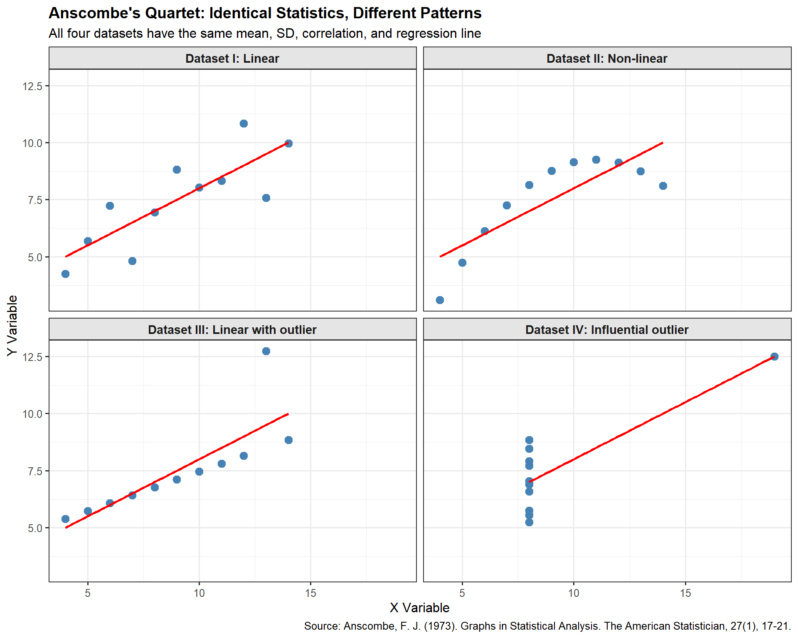
What the visualization reveals:
Dataset I: True linear relationship (what the statistics suggest)
Dataset III: Perfect linear relationship corrupted by a single outlier
Dataset IV: No relationship except one influential point creating the correlation
The lesson: Summary statistics can be identical, but the underlying data can tell completely different stories. Always visualize your data! This is why Exploratory Data Analysis (EDA) is essential before any statistical modeling.
Modern Extensions
Since Anscombe’s Quartet, other demonstrations have been created:
Datasaurus Dozen (2017): 13 datasets with identical statistics but wildly different shapes (including a dinosaur!)
Simpson’s Paradox: Where trends reverse when data is aggregated
These all emphasize: visualization is not optional—it’s essential for understanding data.
When Visualization Helps Most
Visualization is particularly powerful for:
Exploratory Data Analysis (EDA)
- Discovering patterns, trends, and outliers
- Checking data quality and distributions
- Generating hypotheses for further investigation
Confirmatory Analysis
- Presenting evidence for research questions
- Comparing groups or conditions
- Showing relationships between variables
Communication
- Explaining findings to non-technical audiences
- Creating compelling narratives from data
- Supporting arguments in reports and presentations
When Visualization Might Not Help
However, visualizations aren’t always the best choice:
Precise values matter: Tables may be better for exact numbers
Too many variables: Overwhelming complexity reduces clarity
Small datasets: A table of 10 values is clearer than a plot
Complex statistics: Sometimes equations or text are clearer
The key is choosing the right tool for your purpose and audience.
The Science Behind Effective Visualizations
Effective data visualization isn’t just art—it’s grounded in cognitive science and perceptual psychology.
How We Perceive Visual Information
Our visual system processes information through preattentive attributes—features we detect automatically without conscious effort:
Most Effective (Quantitative Perception):
1. Position along a common scale - Most accurate
2. Position on identical but non-aligned scales
3. Length - Very accurate for comparison
4. Angle/Slope - Good for trends
Moderately Effective (Ordered Perception):
5. Area - We underestimate area differences
6. Volume/Cubes - Even harder to compare accurately
7. Color saturation/intensity - Good for ordered data
Less Effective (Categorical Perception):
8. Color hue - Great for categories, not quantities
9. Shape - Excellent for distinct categories (but limited to ~7)
The Hierarchy Matters
This hierarchy explains why:
- Bar charts beat pie charts (length vs. angle)
- Scatter plots are so effective (position on aligned scales)
- Color intensity works for heatmaps (natural ordering)
- Shapes are limited (our brains can only distinguish so many)
Gestalt Principles in Visualization
Our brains automatically organize visual information according to Gestalt principles:
Proximity: Objects near each other are perceived as related
- Group related data points together
- Use whitespace to separate unrelated elements
Similarity: Similar objects are perceived as belonging together
- Use consistent colors/shapes for the same category
- Vary visual properties to show differences
Continuity: Our eyes follow smooth paths
- Use connected lines for sequential data
- Align elements to create visual flow
Closure: We fill in gaps to see complete shapes
- Simplified plots can be more effective than cluttered ones
- Strategic omission guides interpretation
Figure-Ground: We distinguish objects from background
- Use contrast to highlight important data
- Background elements should recede visually
Color Theory for Data Visualization
Color is powerful but must be used thoughtfully:
Sequential Schemes (low to high)
- Single hue increasing in intensity
- For ordered data with a meaningful zero
- Examples: Population density, temperature
Diverging Schemes (negative to positive)
- Two contrasting hues meeting at a neutral midpoint
- For data with a meaningful center (e.g., deviation from average)
- Examples: Profit/loss, temperature anomalies
8% of men and 0.4% of women have color vision deficiency. Always:
- Use colorblind-safe palettes (viridis, ColorBrewer)
- Combine color with other encodings (shape, pattern)
- Test visualizations in grayscale
- Avoid red-green combinations
Data-Ink Ratio
Edward Tufte’s concept: maximize the proportion of ink devoted to data.
Good data-ink ratio:
- Remove unnecessary gridlines
- Eliminate redundant labels
- Minimize decorative elements
- Focus on the data
But don’t go too far:
- Some “non-data ink” aids comprehension
- Context is valuable
- Accessibility sometimes requires redundancy
Principles of Good Visualization
Building on the science, here are practical principles for creating effective visualizations:
1. Be Clear and Informative
Every element should help the reader understand your data:
Descriptive titles: Not just “Plot 1” but “Annual Rainfall Increasing 2000-2020”
Axis labels with units: “Temperature (°C)” not just “Temperature”
Informative legends: “Treatment Group” not “Group1”
Source citations: Give credit and enable verification
Sample sizes: Help readers assess reliability
Example of poor vs. good labeling:
Code
# Poor ggplot(data, aes(x, y)) +geom_point() # Good ggplot(data, aes(Year, Temperature_C)) +geom_point() +labs( title ="Global Temperature Anomaly (1880-2020)", subtitle ="Relative to 1951-1980 average", x ="Year", y ="Temperature Anomaly (°C)", caption ="Source: NASA GISS Surface Temperature Analysis" )
2. Accurately Represent Data
The visual representation must faithfully reflect the underlying data:
Critical rules:
- ❌ Never truncate bar chart axes - bars must start at zero
- ❌ Don’t use 3D effects - they distort perception
- ❌ Avoid dual y-axes - can be manipulated to mislead
- ✅ Use appropriate scales - linear for linear data, log for exponential
- ✅ Maintain aspect ratios - banking to 45° for line graphs
- ✅ Show uncertainty - error bars, confidence intervals
The Truncated Axis Trap
Code
# This makes a 2% difference look huge ggplot(data, aes(group, value)) +geom_bar(stat ="identity") +coord_cartesian(ylim =c(98, 100)) # MISLEADING! # Better - start at zero or use dots ggplot(data, aes(group, value)) +geom_point(size =4) +coord_cartesian(ylim =c(0, 100)) # HONEST
3. Match Visual and Data Dimensions
The number of visual dimensions should match the data dimensions:
Data Structure
Appropriate Visualization
Inappropriate
1 variable
Histogram, density plot, strip plot
3D pie chart
2 variables
Scatter plot, line graph
Radar chart (usually)
2 variables (categorical)
Bar chart, mosaic plot
Stacked area
3 variables
Color/size/shape, facets
3D scatter
Many variables
Heatmap, parallel coordinates, PCA
Spaghetti plot
The 3D problem:
- Adds a dimension without adding information
- Makes comparisons difficult
- Often just decoration
- Exception: True spatial/3D data (rare in most fields)
4. Use Appropriate Visual Encodings
Different data types require different visual representations:
Data Type
Best Encoding
Poor Encoding
Why
Categorical
Color, shape, position
Size, color gradient
Categories have no inherent order
Ordered categorical
Sequential color, position
Random colors
Should show progression
Continuous quantitative
Position, size, gradient
Discrete shapes
Shows magnitude
Time series
Line, position along x
Pie chart
Shows change over time
Part-to-whole
Stacked bar, treemap
Multiple pies
Easier comparison
Distribution
Histogram, density, violin
Bar chart of means
Shows shape
Correlation
Scatter, heatmap
Bar chart
Shows relationship
5. Respect Cognitive Limits
Our working memory can hold ~7 items. Apply this to visualization:
Limit categories:
- Use ≤7 colors for categories
- Group rare categories into “Other”
- Use facets for many groups
Reduce clutter:
- One main message per plot
- Remove redundant elements
- Use whitespace strategically
Guide attention:
- Size/color most important elements
- Annotate key findings
- Use visual hierarchy
6. Be Intuitive
Your audience should understand the visualization quickly:
Follow conventions:
- Time flows left to right
- Positive values up, negative down
- Red = warning/hot, blue = cold
- Larger = more (usually)
Use familiar chart types:
- Scatter plots for correlation
- Line graphs for trends
- Bar charts for comparison
- Box plots for distributions
But challenge conventions when needed:
- If your data doesn’t fit the convention
- If you’re making a deliberate rhetorical point
- Just make the deviation explicit
7. Consider Context and Audience
The same data might need different visualizations for different contexts:
Executive presentation:
- Simple, bold
- One key message
- Minimal text
- Color for impact
Public communication:
- Intuitive metaphors
- Engaging design
- Explained jargon
- Accessible to all
Exploratory analysis:
- Quick and dirty is fine
- Multiple views
- Interactive if helpful
- Focus on discovery
Common Visualization Mistakes to Avoid
The “Lying with Statistics” Hall of Shame:
Truncated axes on bar charts
Makes differences appear larger
Example: A 2% increase shown as a 200% visual difference
Cherry-picked scales
Hiding trends by zooming in/out
Comparing datasets on different scales
3D charts that distort values
Perspective makes comparison impossible
Added dimension contains no information
Dual y-axes without justification
Can be manipulated to show any correlation
Makes comparison difficult
Better: Normalize or use small multiples
Too many colors
Overwhelming and confusing
Reduces accessibility
Better: Use facets or fewer categories
Pie charts with many slices
Angles are hard to compare
Ordering arbitrary
Better: Use sorted bar chart
Area/volume for non-area/volume data
Bubbles exaggerate differences
Our perception of area is non-linear
Better: Use position or length
Ignoring uncertainty
Point estimates without error bars
Hiding confidence intervals
Better: Always show variability
Data viz without data
Infographics with made-up proportions
Charts with no scale
Better: Always ground in actual data
Chartjunk
Unnecessary decoration
Distracting backgrounds
Better: Minimize non-data ink
Visual Perception and Cognitive Biases
Understanding how our brains can be misled helps us create better visualizations:
Common Perceptual Biases
The Weber-Fechner Law
- We perceive differences proportionally, not absolutely
- A change from 10 to 20 feels similar to 100 to 200
- Implication: Use log scales for data spanning orders of magnitude
Area Perception
- We underestimate area differences by ~20%
- Circular areas are especially hard to compare
- Implication: Avoid bubble charts for precise comparison
The Framing Effect
- Y-axis range dramatically affects interpretation
- Same data can look flat or volatile
- Implication: Choose ranges carefully and document choice
The Anchoring Effect
- First value seen becomes reference point
- Ordering affects interpretation
- Implication: Consider sort order in bar charts
The Availability Heuristic
- We overweight memorable/recent data points
- Outliers can dominate perception
- Implication: Show context and distribution, not just extremes
Designing Against Bias
Strategies:
1. Show full distributions, not just means
2. Use reference lines for context
3. Include confidence intervals to show uncertainty
4. Annotate unusual points to explain, not just highlight
5. Test multiple framings of the same data
6. Get feedback from people unfamiliar with the data
Exercise 1.1: Critique Real Visualizations
Critical Thinking Warm-Up
Before creating our own visualizations, let’s develop a critical eye.
Your Task:
1. Find 2-3 data visualizations in news articles, papers, or online
2. For each, analyze using this framework:
Effectiveness:
- What works well?
- What could be improved?
- Does it follow the principles above?
Honesty:
- Are there any misleading elements?
- Are axes appropriate?
- Is uncertainty shown?
Clarity:
- Is the message clear?
- Are labels sufficient?
- Could a non-expert understand it?
Accessibility:
- Would it work in grayscale?
- Are colors distinguishable?
- Is text readable?
Reflection Questions:
- What makes a visualization “trustworthy”?
- When does simplification become distortion?
- How does design affect interpretation?
Exercise 1.2: The Same Data, Different Stories
Understanding Framing
Take a simple dataset (e.g., sales over 12 months with a slight upward trend).
Create two visualizations:
1. One that makes the trend look dramatic
- Hint: Adjust y-axis range, use bright colors, add trend line
One that makes the trend look minimal
Hint: Start y-axis at zero, use muted colors, show wider context
Reflect:
- Which is more “honest”?
- When might each be appropriate?
- How do you decide where to draw the line?
- What additional information would help interpretation?
This exercise reveals how the same data can tell different stories based on design choices.
Part 2: The Three Frameworks
R offers three main approaches to creating visualizations. Understanding their philosophies helps you choose the right tool and appreciate ggplot2’s power.
A Brief History of R Graphics
Base R (1997)
- Original graphics system
- Inspired by S language
- Imperative approach (tell R what to draw)
Grid (2000s)
- Low-level graphics system
- Provided foundation for lattice and ggplot2
- Most users don’t use it directly
Lattice (2002)
- Based on Trellis graphics
- Declarative approach (describe what you want)
- Excellent for multi-panel conditioning plots
ggplot2 (2005)
- Based on Grammar of Graphics (Wilkinson 1999)
- Layered approach with consistent syntax
- Now the dominant visualization framework
Base R: The Painter’s Canvas
Philosophy: Build plots like painting on a canvas—add elements one at a time sequentially.
How it works:
Code
# Initialize canvas plot(x, y) # Add more elements points(x2, y2, col ="red") lines(x3, y3) legend("topleft", ...) title("My Plot")
Pros:
- No additional packages needed
- Fine-grained control over every element
- Good for quick, simple plots
- Direct and intuitive for simple cases
- Fast for exploratory analysis
Cons:
- Verbose code for complex plots
- Harder to maintain consistency across multiple plots
- Limited automatic features (like legends)
- Difficult to modify after creation
- No underlying data structure linking plot to data
When to use:
- Quick exploratory plots in interactive sessions
- Very simple visualizations (basic scatter, histogram)
- When you need maximum control and understand base graphics
- Teaching fundamental graphics concepts
Example:
Code
# Base R example (don't run - just for illustration) plot(pdat$Date, pdat$Prepositions, main ="Prepositions Over Time", xlab ="Date", ylab ="Frequency", pch =16, col ="steelblue") # Add points for North in red north_idx <- pdat$Region =="North"points(pdat$Date[north_idx], pdat$Prepositions[north_idx], col ="red", pch =16) # Add legend legend("topleft", legend =c("South", "North"), col =c("steelblue", "red"), pch =16) # Add regression line abline(lm(Prepositions ~ Date, data = pdat), col ="gray", lty =2)
Lattice: The Template Approach
Philosophy: Use pre-designed templates with formula interface—describe what you want, lattice figures out how.
How it works:
Code
# Formula interface: y ~ x | conditioning xyplot(Prepositions ~ Date | GenreRedux, data = pdat, groups = Region)
Pros:
- Excellent for multi-panel conditioning plots
- Very concise code for complex multi-panel layouts
- Good default aesthetics
- Formula interface is intuitive for statisticians
- Handles panel functions well
Cons:
- Difficult to customize beyond defaults
- Less flexible than ggplot2
- Smaller user community means less support
- Harder to combine with data manipulation
- Learning curve for customization
When to use:
- Quick multi-panel comparisons by groups
- When formula interface matches your thinking
- Academic work requiring simple, standard plots
- You’re already familiar with lattice
Example:
Code
# Lattice example (don't run - just for illustration) library(lattice) # Simple trellis plot xyplot(Prepositions ~ Date | GenreRedux, data = pdat, type =c("p", "r"), # points and regression groups = Region, auto.key =list(space ="right")) # More complex with custom panel function xyplot(Prepositions ~ Date | GenreRedux, data = pdat, groups = Region, panel =function(x, y, ...) { panel.xyplot(x, y, ...) panel.loess(x, y, ...) })
ggplot2: The Grammar of Graphics
Philosophy: Build plots like sentences—combine grammatical elements (data, aesthetics, geometries, scales) into a coherent whole.
The Grammar of Graphics Concept:
Leland Wilkinson’s seminal work proposed that all statistical graphics are composed of:
1. Data to be visualized
2. Geometric objects (geoms) representing data
3. Statistical transformations of data
4. Scales mapping data to aesthetics
5. Coordinate systems
6. Faceting for small multiples
7. Themes for non-data elements
Hadley Wickham implemented this in ggplot2, creating a layered grammar where each element can be specified independently.
How it works:
Code
ggplot(data = pdat, aes(x = Date, y = Prepositions, color = Region)) +geom_point() +geom_smooth(method ="lm") +facet_wrap(~GenreRedux) +theme_bw() +labs(title ="My Plot")
Pros:
- Extremely flexible and powerful
- Consistent, logical syntax across all plot types
- Beautiful defaults that follow visualization best practices
- Massive ecosystem of extensions (50+ packages)
- Active community with extensive documentation
- Seamless integration with tidyverse
- Plots are objects that can be modified
- Statistical transformations built-in
Cons:
- Requires learning the “grammar” (initial learning curve)
- Can be verbose for very simple plots (vs. base)
- Requires installing packages (vs. base)
- Some operations require understanding of layers
When to use:
- Almost everything! Especially:
- Publication-quality figures
- Complex visualizations
- Consistent styling across many plots
- When you want to iterate on design
- When sharing code with others
Why We Focus on ggplot2
This tutorial focuses exclusively on ggplot2 because:
Industry standard: Used in academia, industry, journalism
Transferable skills: The grammar applies to other tools (plotly, Python’s plotnine)
Straightforward customization: Once you understand the system, anything is possible
Publication-ready: Professional output with minimal effort
Community support: Vast documentation, tutorials, Stack Overflow answers
Consistent philosophy: One system for all plot types
Active development: Regular updates and improvements
The “grammar of graphics” was developed by Leland Wilkinson (1999) and implemented in R by Hadley Wickham (2005, 2016). It treats visualizations as composed of layers that can be combined systematically—a paradigm shift in how we think about plots.
Comparing the Three Frameworks
Let’s compare how each framework handles the same task: a scatter plot with groups and a trend line.
Code
# BASE R - Imperative (tell R what to draw) plot(pdat$Date, pdat$Prepositions, col =ifelse(pdat$Region =="North", "red", "blue"), pch =16) abline(lm(Prepositions ~ Date, data = pdat)) legend("topleft", c("North", "South"), col =c("red", "blue"), pch =16) # LATTICE - Formula-based (describe relationships) library(lattice) xyplot(Prepositions ~ Date, data = pdat, groups = Region, type =c("p", "r"), auto.key =TRUE) # GGPLOT2 - Layered grammar (combine components) ggplot(pdat, aes(Date, Prepositions, color = Region)) +geom_point() +geom_smooth(method ="lm")
Comparison:
Aspect
Base R
Lattice
ggplot2
Code length
Medium
Short
Short
Readability
Procedural
Formula
Layered
Customization
Tedious
Limited
Systematic
Modification
Start over
Start over
Add layers
Consistency
Manual
Automatic
Automatic
Learning curve
Low initially
Medium
Medium initially
Power
High but tedious
Good for specific tasks
Very high
The ggplot2 Philosophy: Building in Layers
Think of a ggplot as a layered cake or transparent sheets where each layer adds information:
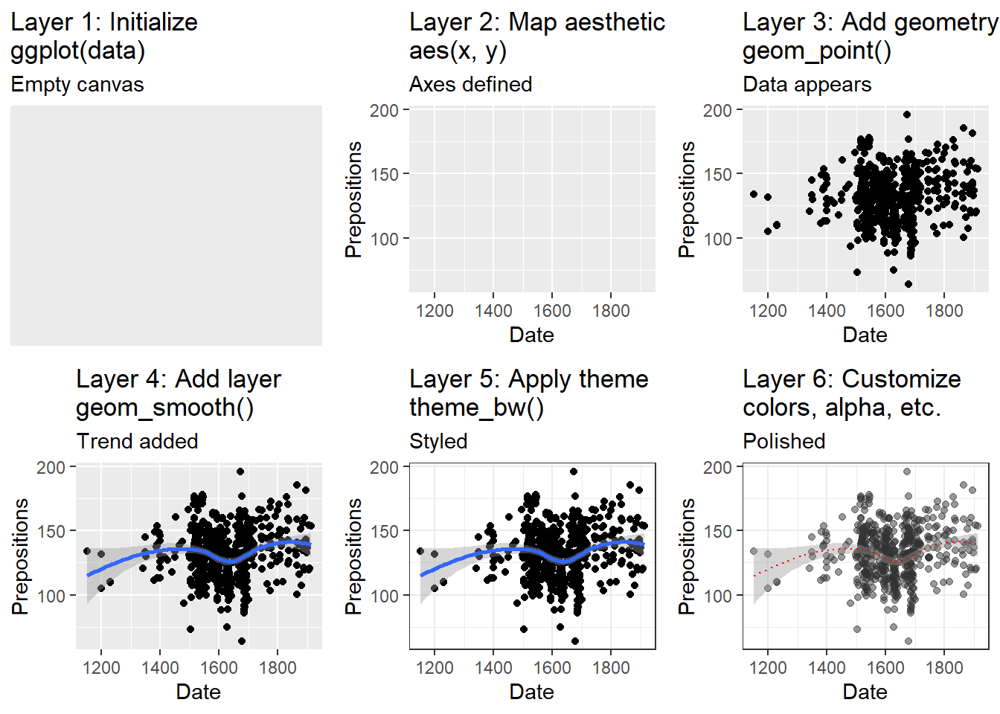
The Building Blocks:
Data - What you’re visualizing (tibble or data.frame)
Aesthetics (aes) - Mappings from data to visual properties
Geometries (geom_*) - Visual representations of data
Statistics (stat_*) - Statistical transformations of data
Scales (scale_*) - Control how aesthetics are mapped
Coordinates (coord_*) - Space in which data is plotted
Facets (facet_*) - Break data into subplots
Themes (theme_*) - Control non-data display elements
Key insights:
- Layers are added with + (not pipes!)
- Order matters for display (bottom to top)
- Each layer can override previous specifications
- Unspecified parameters use intelligent defaults
Exercise 2.1: Understanding Layers
Conceptual Challenge
Look at the layered plot progression above.
Questions:
1. What does each layer add to the visualization?
2. Why is the first layer (just ggplot(pdat)) empty?
3. What would happen if you swapped the order of layers 3 and 4?
4. Can you identify all 8 building blocks in Layer 6?
Deeper thinking:
5. Why is the layer approach more powerful than base R’s imperative approach?
6. What are the advantages of keeping data separate from the plot specification?
7. How does the grammar make it easier to modify plots?
Bonus: Sketch on paper what a 7th layer might add! Consider:
- Annotations (arrows, text)
- Reference lines
- Custom coordinate systems
- Different faceting
Exercise 2.2: Deconstructing Plots
Reverse Engineering
Find a complex ggplot2 visualization (from R Graph Gallery, published papers, or online tutorials).
Your task:
1. Identify each layer in the plot
2. List the aesthetics being used
3. Determine the geom types
4. Note any statistical transformations
5. Identify the theme customizations
Reflection:
- How many layers does it have?
- Which layers are essential vs. decorative?
- How would you simplify it?
- What would you change?
This exercise trains you to “see” the grammar in any ggplot.
Part 3: Setup and First Steps
Installing and Loading Packages
Let’s set up our environment. Run this code once to install packages:
Code
# Install core packages (run once) install.packages("ggplot2") # The star of the show install.packages("dplyr") # Data manipulation install.packages("tidyr") # Data reshaping install.packages("stringr") # String handling # Install helper packages install.packages("gridExtra") # Combining plots install.packages("RColorBrewer") # Color palettes install.packages("flextable") # Pretty tables
Now load the packages for this session:
Code
# Load packages library(ggplot2) # Core plotting library(dplyr) # Data manipulation library(tidyr) # Data reshaping library(stringr) # String processing library(gridExtra) # Arranging plots library(RColorBrewer) # Color palettes library(flextable) # Tables for display
Package Loading Best Practice
Always load packages at the top of your script in a dedicated section. This:
- Makes dependencies explicit and clear
- Helps others reproduce your work
- Prevents unexpected behavior from package conflicts
- Allows you to check versions with sessionInfo()
Pro tip: Use library() not require() in scripts. library() will error if package is missing (catching problems early), while require() just warns.
Understanding Package Dependencies
ggplot2 is part of the tidyverse, a collection of packages that share common design philosophy:
Code
# You can load them all at once install.packages("tidyverse") library(tidyverse) # Loads ggplot2, dplyr, tidyr, and more # Or load individually for more control library(ggplot2) library(dplyr)
Tidyverse packages:
- ggplot2: Data visualization
- dplyr: Data manipulation
- tidyr: Data tidying
- readr: Data import
- purrr: Functional programming
- tibble: Modern data frames
- stringr: String manipulation
- forcats: Factor handling
They work seamlessly together through the pipe operator|> (or %>%).
Loading and Exploring the Data
We’ll work with historical English text data:
Code
# Load data pdat <- base::readRDS("tutorials/data_viz_intro/data/pvd.rda", "rb")
Date
Genre
Text
Prepositions
Region
GenreRedux
DateRedux
1,736
Science
albin
166.01
North
NonFiction
1700-1799
1,711
Education
anon
139.86
North
NonFiction
1700-1799
1,808
PrivateLetter
austen
130.78
North
Conversational
1800-1913
1,878
Education
bain
151.29
North
NonFiction
1800-1913
1,743
Education
barclay
145.72
North
NonFiction
1700-1799
1,908
Education
benson
120.77
North
NonFiction
1800-1913
1,906
Diary
benson
119.17
North
Conversational
1800-1913
1,897
Philosophy
boethja
132.96
North
NonFiction
1800-1913
1,785
Philosophy
boethri
130.49
North
NonFiction
1700-1799
1,776
Diary
boswell
135.94
North
Conversational
1700-1799
1,905
Travel
bradley
154.20
North
NonFiction
1800-1913
1,711
Education
brightland
149.14
North
NonFiction
1700-1799
1,762
Sermon
burton
159.71
North
Religious
1700-1799
1,726
Sermon
butler
157.49
North
Religious
1700-1799
1,835
PrivateLetter
carlyle
124.16
North
Conversational
1800-1913
Understanding Our Variables
Variable
Type
Description
Example Values
Date
Numeric
Year text was written
1150, 1500, 1850
Genre
Categorical
Detailed text type
Fiction, Legal, Science
Text
Character
Document name
“Emma”, “Trial records”
Prepositions
Numeric
Frequency per 1,000 words
125.3, 167.8
Region
Categorical
Geographic origin
North, South
GenreRedux
Categorical
Simplified genre
Fiction, Legal, Religious, etc.
DateRedux
Categorical
Time period
1150-1499, 1500-1599, etc.
About This Data
This dataset comes from the Penn Parsed Corpora of Historical English (PPC), a collection of parsed historical texts. We’re examining how preposition usage has changed over time across different genres and regions.
Research Question: How does preposition frequency vary by time period, genre, and region?
Why prepositions matter: Changes in preposition usage reflect broader syntactic changes in English grammar over time. For example, the decline of inflections led to increased reliance on prepositions for grammatical relationships.
Data structure:
- Observations: Each row is one text
- Time span: ~760 years (1150-1913)
- Genres: Multiple text types showing language variation
- Measurement: Relative frequency controls for text length
Essential Data Exploration
Before creating any visualization, always explore your data:
Code
# Structure: variable types, dimensions str(pdat) # Summary statistics summary(pdat) # Check for missing values sum(is.na(pdat)) colSums(is.na(pdat)) # By column # Check distributions table(pdat$GenreRedux) # Categorical hist(pdat$Prepositions) # Numeric (base R quick check) # Check ranges range(pdat$Date) range(pdat$Prepositions) # Look at specific combinations table(pdat$DateRedux, pdat$GenreRedux)
Before visualizing, thoroughly explore the data structure:
Code
# Try these commands str(pdat) # Structure of the data summary(pdat) # Summary statistics table(pdat$GenreRedux) # Count by genre range(pdat$Date) # Date range
Questions:
1. How many observations (rows) do we have?
2. What’s the earliest and latest date in the dataset?
3. Which genre has the most texts? The fewest?
4. What’s the range of preposition frequencies?
5. Are there any missing values?
6. What’s the distribution of texts across time periods and regions?
Advanced exploration:
7. Calculate summary statistics by group:
Discussion: Why is exploratory analysis important before visualization? What insights did you gain that will inform your visualizations?
Part 4: Creating Your First Plot
Let’s build a plot step by step, understanding each component.
Step 1: Initialize the Plot
Code
ggplot(pdat, aes(x = Date, y = Prepositions))
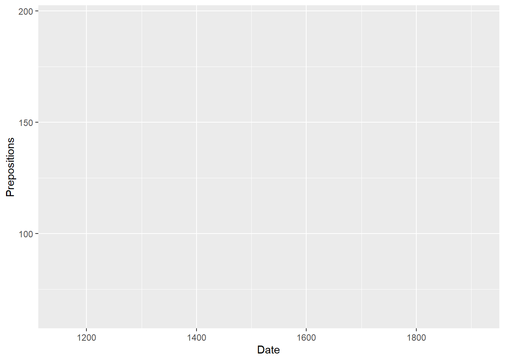
What happened?
- We created a plotting area with defined axes
- We told ggplot which data to use (pdat)
- We defined the aesthetics: Date on x-axis, Prepositions on y-axis
- But no data appears yet! We need to add a geometry layer.
The aes() Function
aes() stands for aesthetics. It creates mappings from data variables to visual properties:
aes(x = Date) → Date values determine horizontal position
aes(y = Prepositions) → Preposition values determine vertical position
aes(color = Genre) → Genre determines color (we’ll add this later)
aes(size = Population) → Population determines point size
aes(shape = Treatment) → Treatment determines point shape
Think of aes() as the “instruction manual” telling ggplot how data maps to visuals.
Critical distinction:
- Inside aes(): Variable from data → mapped to aesthetic
- Outside aes(): Fixed value → applied to all elements
Code
# Inside aes - color varies by data geom_point(aes(color = Region)) # Different colors for North/South # Outside aes - all points same color geom_point(color ="blue") # All points blue
Step 2: Add Points (Geometry Layer)
Code
ggplot(pdat, aes(x = Date, y = Prepositions)) +geom_point()
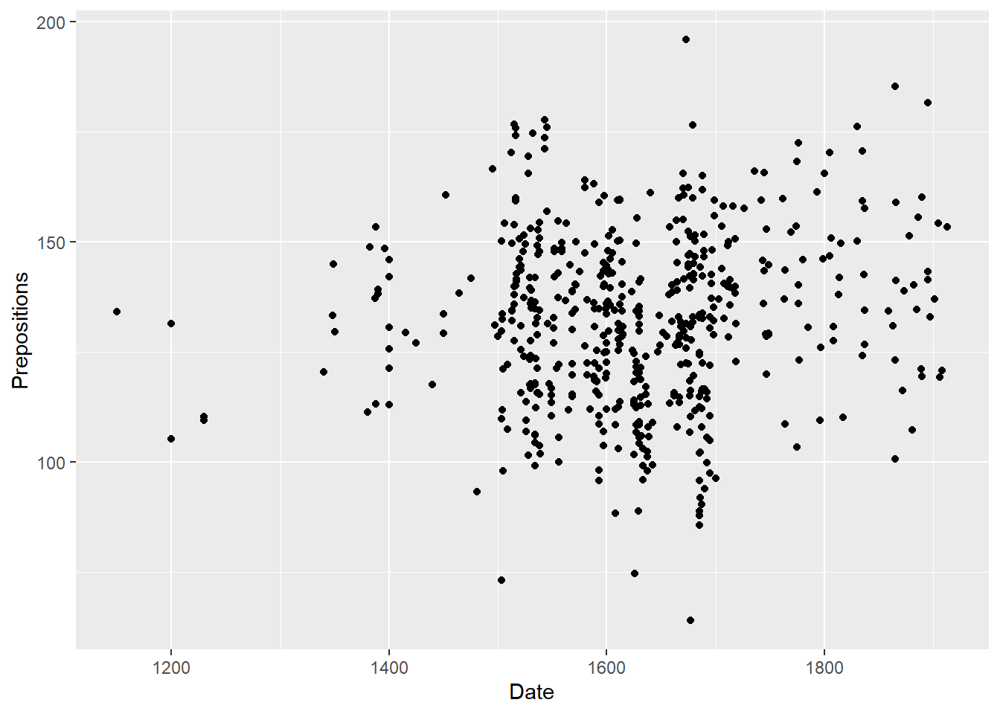
Now we see data! Each point represents one text.
Key insight: The + operator adds layers. Think of it like building with LEGO blocks.
Why + and not |>?
ggplot2 was created before the pipe operator became standard in R. It uses + to add layers because:
- Each layer is an independent object
- Layers are combined, not passed through a pipeline
- The + metaphor matches the “layering” concept
You CAN use pipes to prepare data, then switch to + for layers:
Code
pdat |>filter(Date >1500) |>ggplot(aes(Date, Prepositions)) +# Switch to + geom_point()
Exercise 4.1: Your First Modification
Experiment Time!
Modify the code above to explore different geoms and parameters:
Change geom_point() to geom_line() - what happens? Why doesn’t it make sense?
Try geom_point(size = 3) - what changes?
Try geom_point(color = "red") - what do you notice?
What’s new?
- geom_smooth() adds a smoothed trend line (LOESS by default)
- se = FALSE removes the confidence interval shading
- theme_bw() applies a black-and-white theme
Understanding smoothing methods:
Code
# LOESS (default) - flexible, local weighted regression geom_smooth() # Good for <1000 points, non-linear patterns # Linear regression - straight line geom_smooth(method ="lm") # Use when relationship is linear # Generalized Additive Model - smooth but faster than LOESS geom_smooth(method ="gam") # Good for large datasets # Show confidence interval geom_smooth(se =TRUE) # Gray ribbon shows uncertainty
Layer Order Matters (Sometimes)
Layers are drawn in the order you add them:
- geom_point() then geom_smooth() → points underneath, line on top
- geom_smooth() then geom_point() → line underneath, points on top
Try reversing them to see the difference!
When order matters:
- Overlapping geoms (later ones on top)
- Transparency effects
- Visual hierarchy
When order doesn’t matter:
- Non-overlapping geoms
- Themes (always apply to whole plot)
- Scales (affect how data maps)
Step 4: Storing Plots as Objects
You can save plots to variables and modify them later:
Code
# Store the base plot p <-ggplot(pdat, aes(x = Date, y = Prepositions)) +geom_point() +theme_bw() # Add nicer labels p +labs(x ="Year", y ="Frequency (per 1,000 words)")
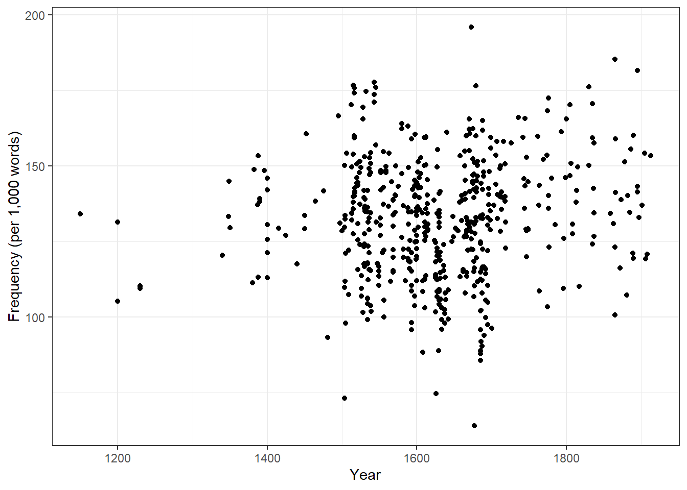
Why is this useful?
- Create a base plot once, try many variations
- Try different modifications without retyping everything
- Build complex plots incrementally
- Compare variations easily
- Save work in progress
Powerful pattern:
Code
# Create base p_base <-ggplot(data, aes(x, y)) # Try different geoms p_base +geom_point() p_base +geom_line() p_base +geom_boxplot() # Try different themes p_final <- p_base +geom_point() p_final +theme_bw() p_final +theme_minimal() p_final +theme_classic() # Save favorite my_plot <- p_final +theme_bw() ggsave("plot.png", my_plot)
Exercise 4.2: Building Incrementally
Layer by Layer
Start with this base:
Code
p <-ggplot(pdat, aes(x = Date, y = Prepositions)) +geom_point()
Now add one element at a time, running the code after each:
1. Add theme_bw()
2. Add geom_smooth(method = "lm")
3. Add labs(title = "My First Plot")
4. Add labs(x = "Year", y = "Frequency")
5. Add geom_smooth(se = TRUE, color = "red")
Observe:
- How does the plot evolve?
- What does each addition contribute?
- What happens if you add two smooth geoms?
Challenge:
- Make the points blue and semi-transparent
- Add a title AND subtitle
- Change the smooth method to “loess”
- Remove the legend if one appears
Advanced:
Store different versions and compare:
Code
p1 <- p +geom_smooth(method ="lm") p2 <- p +geom_smooth(method ="loess") p3 <- p +geom_smooth(method ="gam") gridExtra::grid.arrange(p1, p2, p3, ncol =3)
Step 5: Plots in Pipelines
ggplot integrates beautifully with dplyr pipelines:
Code
pdat |> dplyr::select(DateRedux, GenreRedux, Prepositions) |> dplyr::group_by(DateRedux, GenreRedux) |> dplyr::summarise(Frequency =mean(Prepositions)) |>ggplot(aes(x = DateRedux, y = Frequency, group = GenreRedux, color = GenreRedux)) +geom_line(size =1.2) +theme_bw() +labs(title ="Mean Preposition Frequency Over Time", x ="Time Period", y ="Mean Frequency", color ="Genre")
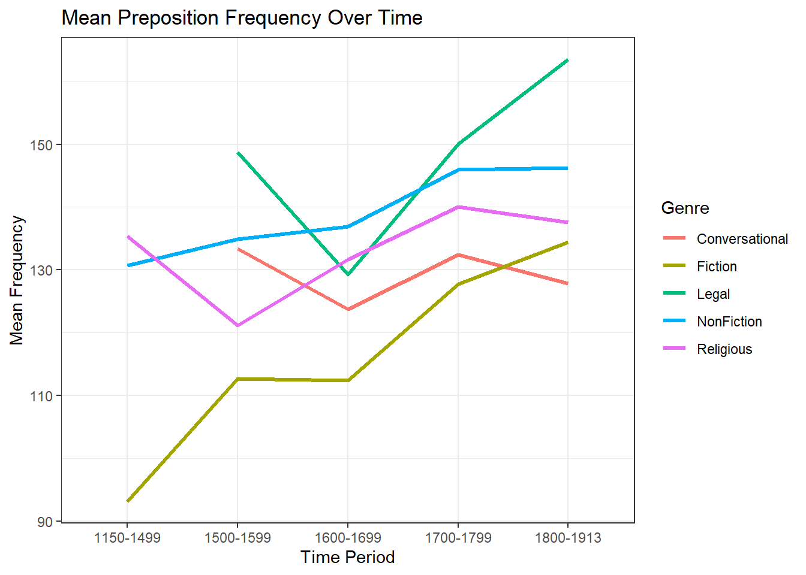
Pipeline Power:
1. Start with raw data
2. Select relevant variables (select)
3. Group by categories (group_by)
4. Calculate summaries (summarise)
5. Pipe directly into ggplot (no data = needed!)
6. No intermediate objects cluttering workspace
When to Use Pipes
Use pipes when:
- You’re transforming data before plotting
- The transformation is specific to this one plot
- You want cleaner, more readable code
- The transformation is simple/medium complexity
Don’t use pipes when:
- You need the transformed data elsewhere
- You want to inspect intermediate steps
- The transformation is very complex (better to break into steps)
- You’re creating multiple plots from same transformed data
Best practice:
Code
# Simple transformation - use pipe data |>filter(x >10) |>ggplot(...) # Complex transformation - save intermediate plot_data <- data |>filter(x >10) |>group_by(category) |>summarize(mean_y =mean(y), sd_y =sd(y)) # Now use for multiple plots ggplot(plot_data, aes(category, mean_y)) + ... ggplot(plot_data, aes(category, sd_y)) + ...
Exercise 4.3: Pipeline Practice
Data Transformation + Plotting
Create a pipeline that:
1. Filters to texts after 1500
2. Groups by Genre and Region
3. Calculates mean and SD of Prepositions
4. Creates a plot showing these statistics
Hints:
Code
pdat |>filter(Date >1500) |>group_by(Genre, Region) |>summarize( mean_prep =mean(Prepositions), sd_prep =sd(Prepositions) ) |>ggplot(aes(x = Genre, y = mean_prep, color = Region)) +# Your geom here
Questions:
- What geom works best for this data?
- How can you show the SD?
- What if you want both points and error bars?
Advanced: Create the same plot but with facets by time period instead of color by region.
Part 5: Customizing Axes and Titles
Professional plots require clear, informative labels and appropriate axis ranges. This section covers everything from basic labels to advanced axis customization.
The Importance of Good Labels
Labels are not decorative—they’re essential for communication:
Poor labels lead to:
- Confusion about what data represents
- Inability to reproduce analysis
- Misinterpretation of findings
- Lack of credibility
Good labels provide:
- Clear variable identification
- Units of measurement
- Data source and context
- Guidance for interpretation
The “Self-Contained” Test
A good visualization should be understandable with minimal accompanying text. Ask yourself:
- Can someone unfamiliar with your work understand this plot?
- Are all necessary details present?
- Is the main message clear?
- Could this plot stand alone in a presentation?
Adding Titles and Labels
The labs() function is your one-stop shop for all text labels:
Code
p +labs( x ="Year of Composition", y ="Relative Frequency (per 1,000 words)", title ="Preposition Use Over Time", subtitle ="Based on the Penn Parsed Corpora (PPC)", caption ="Source: Historical English texts, 1150-1913")
caption: Data source, notes, sample size, disclaimers
x, y: Axis labels—variable name + units
color, fill, size, etc.: Legend titles for aesthetics
Alternative title methods:
Code
# Using ggtitle (older style) p +ggtitle("My Title", subtitle ="My Subtitle") # Using labs (recommended - more consistent) p +labs(title ="My Title", subtitle ="My Subtitle") # Combining approaches (but why?) p +ggtitle("Title") +labs(x ="X Label") # Works but inconsistent
Add disclaimers: “Preliminary data, subject to revision”
Attribution: “Analysis by [Your Name]”
Label Formatting
You can use markdown-style formatting in labels (with some limitations):
Code
# Line breaks with \n labs(title ="This is a long title\nthat spans two lines") # Mathematical notation (limited support) labs(y =expression(Temperature~(degree*C))) labs(y =expression(paste("Area (", m^2, ")"))) # Italic text in ggtext package library(ggtext) labs(title ="<i>Escherichia coli</i> growth rate")
Exercise 5.1: Effective Labeling
Practice Good Communication
Create a plot with complete, professional labels:
Code
ggplot(pdat, aes(x = GenreRedux, y = Prepositions)) +geom_boxplot() +labs( x ="______", # Your label y ="______", # Your label title ="______", # Your title subtitle ="______", # Your subtitle caption ="______"# Your caption )
Requirements:
- X-axis: Clear genre description
- Y-axis: Variable name with units
- Title: What the plot shows
- Subtitle: Data source or time period
- Caption: Your name/affiliation and date
Challenge: Make your labels so clear that someone unfamiliar with your research could understand the plot immediately.
Peer review: Exchange plots with a colleague. Can they understand it without explanation? What would improve it?
Controlling Axis Ranges
Use coord_cartesian() to zoom in/out without cutting data:
Code
p +coord_cartesian(xlim =c(1000, 2000), ylim =c(0, 300))
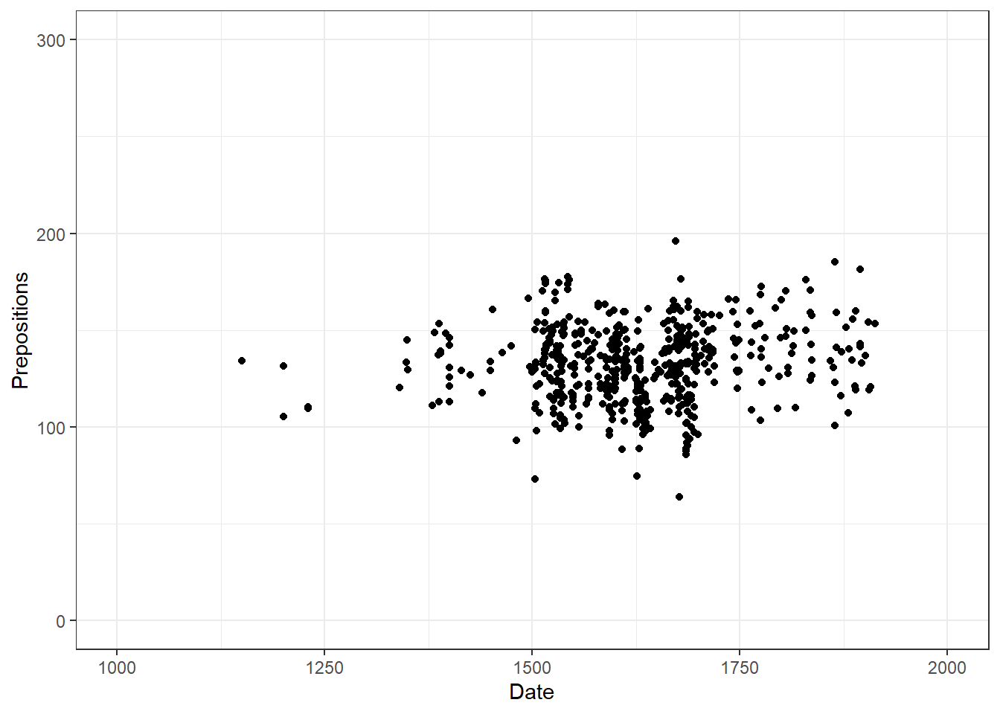
Why zoom?
- Focus on region of interest
- Remove outliers visually (but keep in calculations)
- Standardize scales across multiple plots
- Improve readability of dense regions
coord_cartesian() vs scale_*_continuous()
Use coord_cartesian(xlim = c(min, max)):
- Zooms without removing data
- Statistical computations use ALL data
- Outliers still affect smooths, stats
- Preferred for most cases
- Like “zooming in” with a camera
Use scale_*_continuous(limits = c(min, max)):
- Actually removes data outside range
- Statistical computations use only visible data
- Changes regression lines, smooths
- Use when you truly want to exclude data
- Like “cropping” the data
Example of the difference:
Code
# Same visible area, different statistics p1 <-ggplot(data, aes(x, y)) +geom_smooth() +coord_cartesian(xlim =c(0, 50)) # Smooth uses all data p2 <-ggplot(data, aes(x, y)) +geom_smooth() +scale_x_continuous(limits =c(0, 50)) # Smooth uses only x < 50 # Compare them gridExtra::grid.arrange(p1, p2, ncol =2)
Expanding Axes Beyond Data Range
Sometimes you want extra space:
Code
# Add 10% padding on all sides (default) scale_x_continuous(expand =expansion(mult =0.1)) # Add fixed amount scale_x_continuous(expand =expansion(add =5)) # Different padding on each side scale_x_continuous(expand =expansion(mult =c(0.1, 0.2))) # 10% left, 20% right # No padding (bars touch axes) scale_x_continuous(expand =c(0, 0))
When to use:
- Bar plots often look better with no bottom padding
- Leave space for text annotations
- Standardize across facets
- Aesthetic preference
Styling Axis Text
Customize the appearance of axis labels and tick marks:
Code
p +labs(x ="Year", y ="Frequency") +theme( axis.text.x =element_text( face ="italic", # italic, bold, plain, bold.italic color ="red", size =10, angle =45, # rotate labels hjust =1, # horizontal justification vjust =1# vertical justification ), axis.text.y =element_text( face ="bold", color ="blue", size =12 ) )
When to remove axes:
- Creating small multiples where shared axes apply
- Making minimalist graphics for presentations
- Focusing on overall patterns, not specific values
- Axes are obvious from context
- You’re creating a “sparkline” (small embedded plot)
What you can remove:
Code
theme( # Text axis.text.x =element_blank(), # X-axis labels axis.text.y =element_blank(), # Y-axis labels axis.title.x =element_blank(), # X-axis title axis.title.y =element_blank(), # Y-axis title # Lines axis.ticks.x =element_blank(), # X tick marks axis.ticks.y =element_blank(), # Y tick marks axis.line.x =element_blank(), # X-axis line axis.line.y =element_blank(), # Y-axis line # Both axis.text =element_blank(), # All labels axis.ticks =element_blank(), # All ticks # Grid panel.grid.major =element_blank(), # Major grid lines panel.grid.minor =element_blank() # Minor grid lines )
Don’t Remove Too Much
While minimalism can be elegant, removing too many elements can make plots confusing:
Keep:
- At least one set of axis labels (x or y)
- Grid lines if they help read values
- Tick marks for reference
Consider removing:
- Redundant labels in faceted plots
- Minor grid lines
- Axis lines when using theme_bw()
Custom Axis Breaks and Labels
Fine-tune where tick marks appear and what they say:
Code
p +scale_x_continuous( name ="Year of Composition", breaks =seq(1150, 1900, 50), # Tick mark locations labels =seq(1150, 1900, 50) # Tick mark labels ) +scale_y_continuous( name ="Relative Frequency", breaks =seq(70, 190, 20), labels =seq(70, 190, 20) )
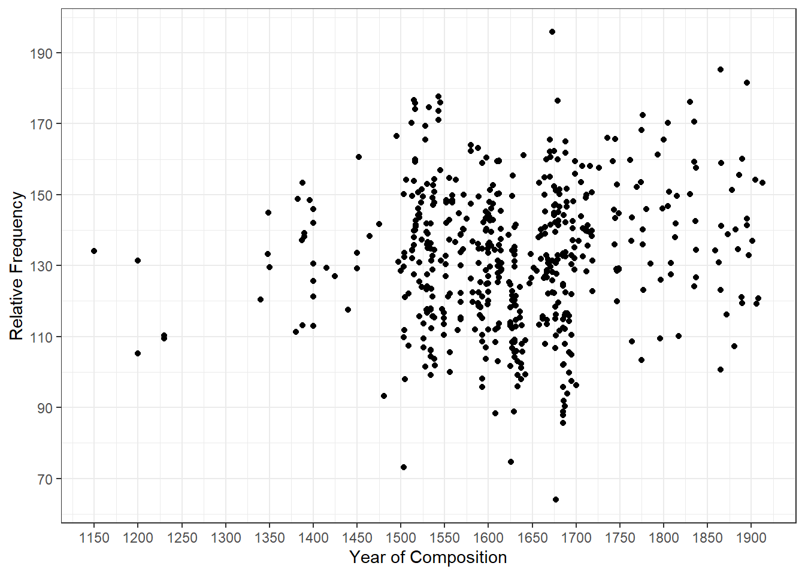
Understanding breaks:
Code
# Default - ggplot chooses scale_x_continuous() # Usually 5-7 breaks # Specific locations scale_x_continuous(breaks =c(1200, 1500, 1800)) # Regular sequence scale_x_continuous(breaks =seq(0, 100, 10)) # 0, 10, 20, ..., 100 # Every value (usually too many) scale_x_continuous(breaks =unique(data$x)) # No breaks scale_x_continuous(breaks =NULL)
Understanding labels:
Code
# Same as breaks (default) scale_x_continuous(breaks =1:5, labels =1:5) # Custom text scale_x_continuous( breaks =1:5, labels =c("Very Low", "Low", "Medium", "High", "Very High") ) # Formatted numbers scale_x_continuous(labels = scales::comma) # 1,000 not 1000 scale_x_continuous(labels = scales::percent) # 25% not 0.25 scale_x_continuous(labels = scales::dollar) # $100 not 100 # Custom function scale_x_continuous(labels =function(x) paste0(x, "°C"))
Custom Axis Labels with scales Package
The scales package provides many useful label formatters:
This is great for:
- Converting numbers to categories
- Adding units to values
- Formatting currency, percentages
- Abbreviating long labels
- Scientific notation
On a log scale:
- Same vertical distance = same percentage change
- Useful for comparing growth rates
- Reveals patterns in wide-ranging data
- Makes small values visible
But beware:
- Can’t show zero or negative values
- Can make differences look smaller
- Requires clear labeling
Exercise 5.2: Axis Mastery
Fine-Tuning Challenge
Create a plot with:
1. Custom axis ranges that zoom into the 1600-1900 period
2. X-axis breaks every 100 years
3. Rotated x-axis labels at 45 degrees
4. Y-axis formatted to show values from 50 to 200
5. Professional title and subtitle
Bonus: Add a caption noting the date range you’re showing.
Reflect:
- How does zooming in change what story the data tells?
- What details become visible that weren’t before?
- What context is lost?
- When is zooming appropriate vs. misleading?
Exercise 5.3: Scale Transformations
Understanding Transformations
Create simulated data with exponential growth:
Code
exp_data <-data.frame( year =1950:2020, population =2.5e9*exp(0.015* (1950:2020-1950)) )
Create three plots:
1. Linear scale (default)
2. Log10 y-axis
3. Log10 both axes
Questions:
- Which reveals the growth rate best?
- Which shows actual population numbers best?
- When would each be appropriate?
- How do the visual slopes differ?
Challenge: Add proper labels that explain the scale transformation.
Part 6: Working with Colors
Color is one of the most powerful (and most misused) tools in data visualization. This section covers color theory, practical application, and accessibility.
Why Color Matters
Color serves multiple purposes in visualization:
Functional purposes:
- ✅ Distinguish categories clearly
- ✅ Show continuous values intuitively
- ✅ Highlight important data points
- ✅ Create visual hierarchy
- ✅ Encode additional dimensions
But color can also:
- ❌ Confuse if overused
- ❌ Exclude colorblind viewers (8% of men)
- ❌ Mislead through poor choices
- ❌ Fail in black-and-white reproduction
- ❌ Vary across devices/screens
Color Theory for Data Visualization
Understanding color theory helps you make better choices.
The Color Dimensions
Colors have three properties:
Hue - The color itself (red, blue, green)
Best for categorical distinctions
Limit to 7-8 distinct hues
Saturation - Intensity of the color
Vibrant vs. muted
Can show emphasis
Lightness/Value - How light or dark
Critical for sequential scales
Affects visibility
Color Scheme Types
Sequential (Light to Dark, Single Hue)
Code
# For ordered data: 0 to 100, low to high # Examples: population density, test scores scale_color_gradient(low ="white", high ="darkblue")
Diverging (Two Hues Meeting at Neutral)
Code
# For data with meaningful midpoint # Examples: temperature anomaly, profit/loss scale_color_gradient2(low ="blue", mid ="white", high ="red", midpoint =0)
ggplot(pdat, aes(x = Date, y = Prepositions, color = GenreRedux)) +geom_point() +theme_bw()
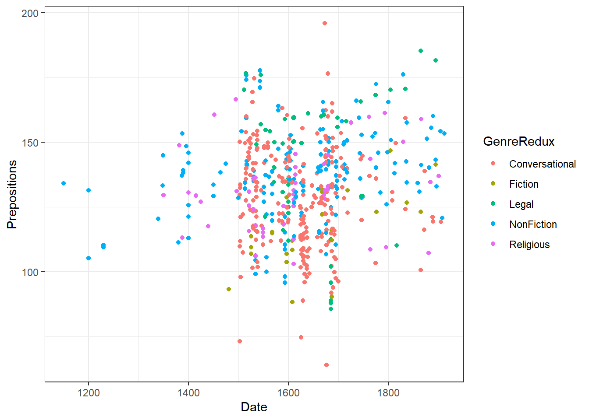
What happened?
- color = GenreRedux in aes() maps genre to color
- ggplot automatically picks colors (hcl palette)
- A legend appears automatically
- Each genre gets a distinct color
Color vs. Fill:
Code
# COLOR - for points, lines, borders geom_point(aes(color = category)) geom_line(aes(color = group)) geom_bar(aes(color = category)) # Just the outline # FILL - for areas, bars, boxes geom_bar(aes(fill = category)) # The whole bar geom_boxplot(aes(fill = category)) geom_polygon(aes(fill = category)) # Both together geom_bar(aes(fill = category), color ="black") # Black outlines
Inside vs. Outside aes()
This is one of the most common sources of confusion in ggplot2!
Inside aes() - color represents DATA:
Code
geom_point(aes(color = GenreRedux)) # Color varies by genre
Each data point gets colored based on its GenreRedux value.
Outside aes() - color is FIXED:
Code
geom_point(color ="blue") # All points blue
Every single point is blue, regardless of data.
Common mistake:
Code
# WRONG - tries to color by literal string "GenreRedux" geom_point(color ="GenreRedux") # All points the color "GenreRedux" # RIGHT - color by the variable GenreRedux geom_point(aes(color = GenreRedux)) # Each genre a different color
When to use each:
Goal
Method
Example
Color varies by data
Inside aes()
aes(color = category)
All same color
Outside aes()
color = "red"
Override automatic color
Outside after scale
scale_color_manual(...) + geom_point(color = "red") will be red
Manual Color Selection
Choose your own colors with scale_color_manual():
Code
ggplot(pdat, aes(x = Date, y = Prepositions, color = GenreRedux)) +geom_point(size =2) +scale_color_manual( name ="Text Genre", # Legend title values =c("red", "gray30", "blue", "orange", "gray80"), breaks =c("Conversational", "Fiction", "Legal", "NonFiction", "Religious") ) +theme_bw()
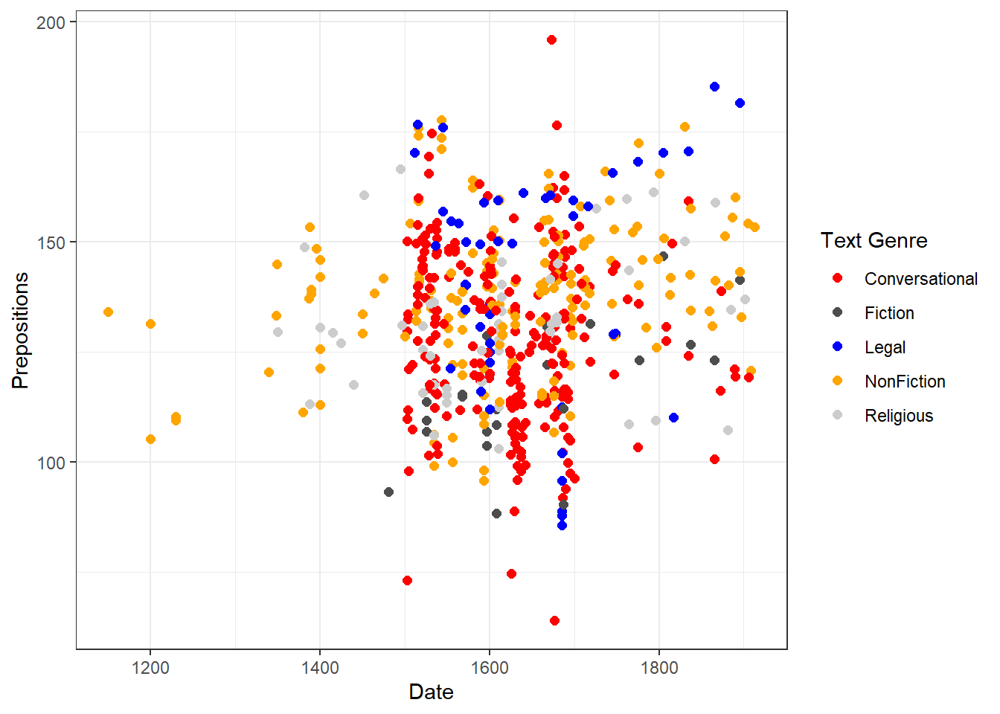
Color specification methods:
Code
# Named colors color ="red"color ="steelblue"# Hex codes (most precise) color ="#FF6347"# Tomato red color ="#1E90FF"# Dodger blue # RGB color =rgb(255, 99, 71, maxColorValue =255) # HSV (hue, saturation, value) color =hsv(0.5, 0.7, 0.9)
# Define palette my_colors <-c( "Treatment A"="#E69F00", "Treatment B"="#56B4E9", "Treatment C"="#009E73", "Control"="#999999") # Use in multiple plots ggplot(data, aes(x, y, color = group)) +geom_point() +scale_color_manual(values = my_colors) ggplot(data, aes(group, value, fill = group)) +geom_bar(stat ="identity") +scale_fill_manual(values = my_colors)
Benefits:
- Consistency across all figures
- Easy to update everywhere
- Meaningful names
- Reusable code
Exercise 6.1: Color Exploration
Experiment with Colors
Create a scatter plot colored by Region
Try these color combinations:
c("red", "blue")
c("coral", "steelblue")
c("gray20", "orange")
c("#E69F00", "#56B4E9") (hex codes)
Which combination is easiest to distinguish?
Which looks most professional?
Questions:
- How do the combinations differ in readability?
- Which would work best in different contexts (paper, presentation, web)?
- Do any combinations have problematic connotations?
Accessibility Check:
- Convert your plot to grayscale (simulate colorblindness):
Code
# In R library(colorblindr) cvd_grid(your_plot) # Shows multiple colorblind simulations # Or export and use online tools # https://www.color-blindness.com/coblis-color-blindness-simulator/
p +geom_point(aes(color = Prepositions)) +scale_color_continuous() +labs(color ="Preposition\nFrequency")
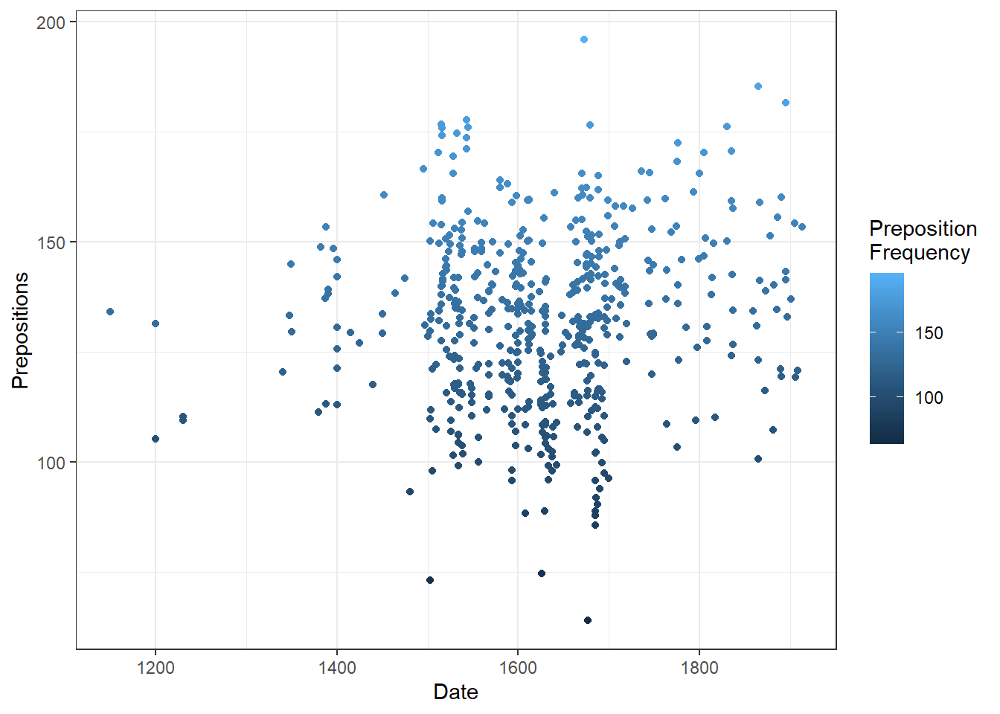
Customizing continuous scales:
Code
# Two-color gradient scale_color_gradient(low ="white", high ="darkblue") # Three-color gradient (diverging) scale_color_gradient2( low ="blue", mid ="white", high ="red", midpoint =100# The value that should be white ) # N-color gradient scale_color_gradientn( colors =c("blue", "cyan", "yellow", "red"), values = scales::rescale(c(0, 50, 100, 150)) # Where each color starts )
Better gradients with viridis:
Code
p +geom_point(aes(color = Prepositions), size =2) +scale_color_viridis_c(option ="plasma") +labs(color ="Preposition\nFrequency")
Sequential (top section):
- Single hue increasing in intensity
- For ordered data (low to high)
- Examples: “Blues”, “Greens”, “Reds”, “Purples”, “Greys”
Diverging (middle section):
- Two hues meeting at a neutral point
- For data with meaningful midpoint
- Examples: “RdBu” (Red-Blue), “BrBG” (Brown-Blue-Green), “PiYG” (Pink-Yellow-Green)
p +geom_point(aes(color = GenreRedux)) +scale_color_brewer(palette ="Set1") +theme_bw()
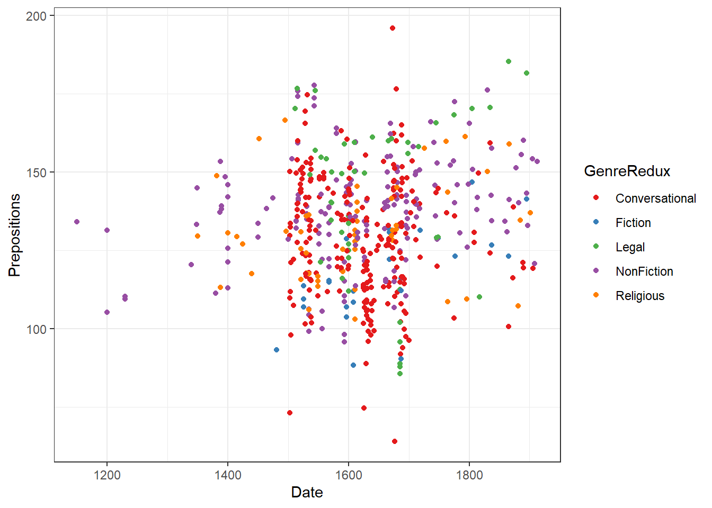
Code
p +geom_point(aes(color = GenreRedux)) +scale_color_brewer(palette ="Dark2") +theme_bw()
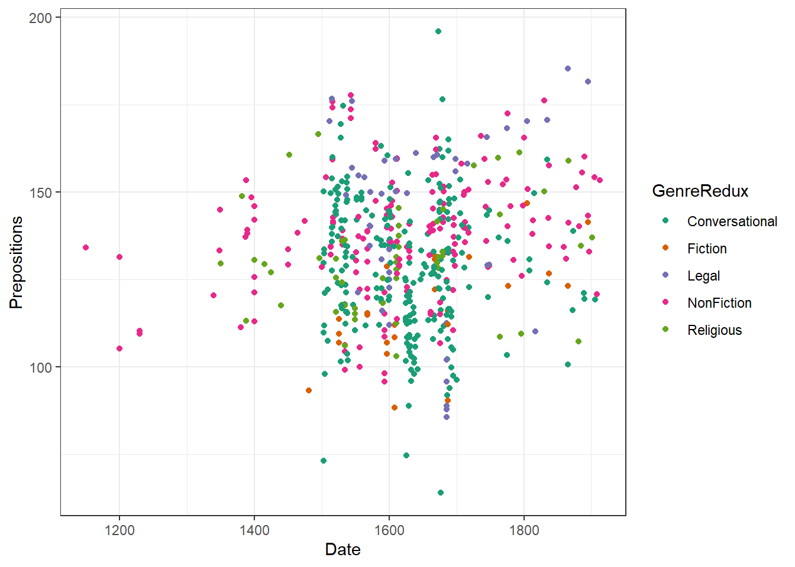
Choosing the right Brewer palette:
Code
# For categorical data (discrete categories) scale_color_brewer(palette ="Set1") # Max 9 colors, bright scale_color_brewer(palette ="Set2") # Max 8 colors, pastel scale_color_brewer(palette ="Dark2") # Max 8 colors, dark scale_color_brewer(palette ="Paired") # Max 12 colors, pairs # For sequential data (low to high) scale_color_brewer(palette ="Blues") # Light to dark blue scale_color_brewer(palette ="YlOrRd") # Yellow-Orange-Red scale_color_brewer(palette ="Greens") # Light to dark green # For diverging data (negative to positive) scale_color_brewer(palette ="RdBu") # Red-White-Blue scale_color_brewer(palette ="BrBG") # Brown-White-Blue-Green scale_color_brewer(palette ="PuOr") # Purple-White-Orange # Reverse the palette scale_color_brewer(palette ="Set1", direction =-1)
Choosing Color Palettes
For categorical data (distinct groups):
- “Set1” - Bright, high contrast, max 9 colors (best for <6 categories)
- “Set2” - Pastel, softer, max 8 colors (good for presentations)
- “Set3” - Even softer pastels, max 12 colors (very soft contrast)
- “Dark2” - Dark/saturated, max 8 colors (good readability)
- “Paired” - 12 colors in 6 pairs (when grouping makes sense)
- “Accent” - Emphasis colors, max 8 colors
For sequential data (continuous, low to high):
- Single hue: “Blues”, “Greens”, “Reds”, “Purples”, “Oranges”
- Multi-hue: “YlOrRd” (Yellow-Orange-Red), “YlGnBu” (Yellow-Green-Blue)
- Reversed: Add direction = -1 to flip
For diverging data (continuous, negative to positive):
- Cool-Warm: “RdBu” (Red-Blue), “RdYlBu” (Red-Yellow-Blue)
- Earth tones: “BrBG” (Brown-Blue-Green), “PRGn” (Purple-Green)
- Contrasts: “PiYG” (Pink-Yellow-Green), “PuOr” (Purple-Orange)
General guidelines:
- Fewer categories = more color options
- Consider your medium (print vs. screen vs. projector)
- Test in grayscale
- Account for cultural associations (red = danger, green = go)
Viridis: The Accessibility Champion
Viridis palettes are specifically designed for:
- Colorblind accessibility - distinguishable by all types of color vision deficiency
- Perceptual uniformity - equal steps look equally different
- Grayscale printing - maintains information in black & white
- Visual appeal - beautiful and modern
Code
p +geom_point(aes(color = GenreRedux), size =2) +scale_color_viridis_d() +# _d for discrete/categorical theme_bw()
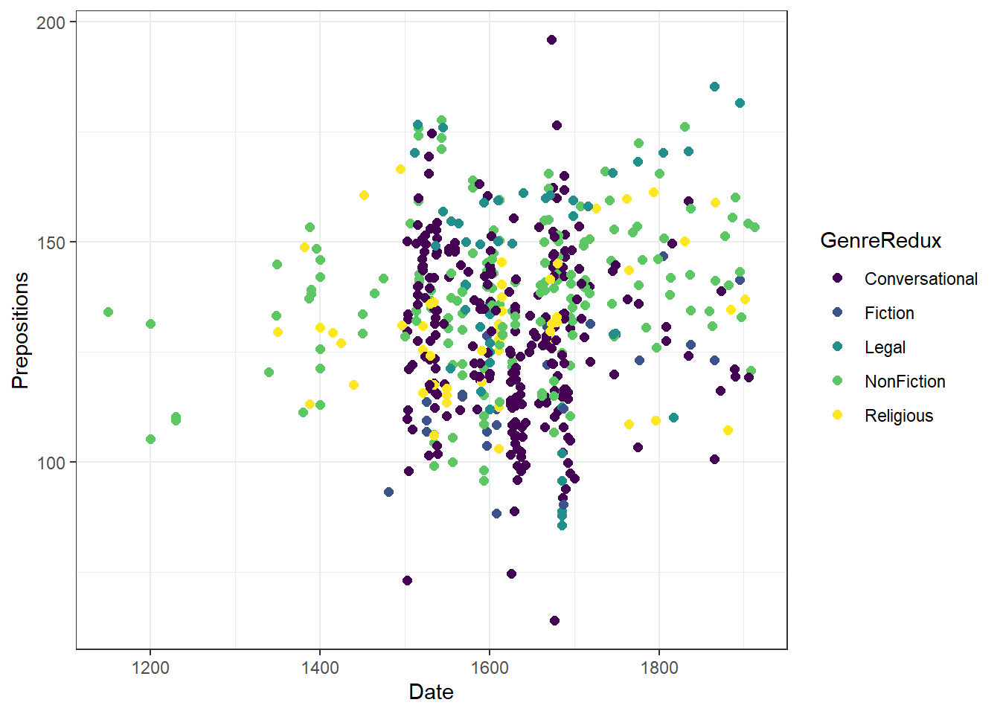
Viridis options (each with its own character):
Code
# Viridis (default) - Purple-green-yellow scale_color_viridis_d(option ="viridis") # or just "D" scale_color_viridis_c(option ="viridis") # for continuous # Magma - Black-purple-yellow scale_color_viridis_d(option ="magma") # or "A" # Inferno - Black-purple-yellow-white scale_color_viridis_d(option ="inferno") # or "B" # Plasma - Purple-pink-yellow scale_color_viridis_d(option ="plasma") # or "C" # Cividis - Blue-yellow (best for colorblind) scale_color_viridis_d(option ="cividis") # or "E" # Rocket - Black-red-white (new) scale_color_viridis_d(option ="rocket") # or "F" # Mako - Dark blue-light blue (new) scale_color_viridis_d(option ="mako") # or "G" # Turbo - Rainbow-like but perceptually uniform scale_color_viridis_d(option ="turbo") # or "H"
Customizing viridis:
Code
# Reverse the palette scale_color_viridis_d(direction =-1) # Start and end at different points (use less of the range) scale_color_viridis_d(begin =0.2, end =0.8) # Change transparency scale_color_viridis_d(alpha =0.7) # For continuous data scale_color_viridis_c(option ="plasma")
When to Use Viridis
Use viridis when:
- Accessibility is important (academic papers, public-facing)
- You have many categories (works well with 8+)
- Data will be printed/photocopied
- You want a modern, professional look
- You’re showing continuous data on a heatmap
Consider alternatives when:
- You need specific brand colors
- Very few categories (2-3) - simpler colors may be clearer
- Cultural color associations matter (e.g., red/green for profit/loss)
- You specifically want diverging colors (viridis is sequential)
Exercise 6.2: Palette Showdown
Compare and Contrast
Create the same plot with 4 different color schemes:
1. Default ggplot colors
2. A Brewer palette of your choice
3. Viridis
4. Manual colors you select
Code template:
Code
# Base plot base <-ggplot(pdat, aes(Date, Prepositions, color = GenreRedux)) +geom_point(size =2) +theme_bw() # 1. Default p1 <- base +labs(title ="Default") # 2. Brewer p2 <- base +scale_color_brewer(palette ="___") +labs(title ="Brewer: ___") # 3. Viridis p3 <- base +scale_color_viridis_d(option ="___") +labs(title ="Viridis: ___") # 4. Manual my_colors <-c(___) p4 <- base +scale_color_manual(values = my_colors) +labs(title ="Manual") # Compare gridExtra::grid.arrange(p1, p2, p3, p4, ncol =2)
Evaluation criteria:
- Which is most visually appealing?
- Which is easiest to distinguish groups?
- Which would work best in a black-and-white printout?
- Which would you use in a publication?
- Which is most colorblind-friendly?
Pro tip: Use grid.arrange() to show all four side-by-side!
Challenge: Export the comparison and test it:
1. Print in grayscale
2. Use a colorblind simulator
3. View on different devices (phone, laptop, projector)
4. Show to colleagues - which do they prefer?
Exercise 6.3: Color Accessibility Audit
Testing Accessibility
Take any plot you’ve created with color.
Test suite:
1. Colorblind simulation
- Use online simulator or R package colorblindr
- Test all types: deuteranopia, protanopia, tritanopia
Shape categories:
- 0-14: Open shapes (can have color for border)
- 15-20: Filled shapes (can have color for solid)
- 21-25: Shapes with BOTH border and fill (can set color AND fill)
Commonly used:
- 0 = open square, 1 = open circle, 2 = open triangle
- 15 = filled square, 16 = filled circle, 17 = filled triangle
- 21 = filled circle with border, 22 = filled square with border
The complete set:
Code
# Show all shapes shapes_df <-data.frame( shape =0:25, x =rep(1:5, length.out =26), y =rep(5:1, each =5, length.out =26) ) ggplot(shapes_df, aes(x, y)) +geom_point(aes(shape = shape), size =5, fill ="red") +scale_shape_identity() +geom_text(aes(label = shape), nudge_y =-0.3, size =3) +theme_void()
Combining Color and Shape for Maximum Accessibility
Why redundant encoding?
This helps:
- Colorblind readers - shapes provide an alternative to color
- Black-and-white printing - information preserved without color
- Distinguishing overlapping points - easier to identify which is which
- Multiple disabilities - reaches more of your audience
Best practice: Always use redundant encoding for critical distinctions in publications.
Shape Limitations
Avoid:
- Using more than 6-7 different shapes (hard to distinguish)
- Tiny shapes (< size 2) with complex forms
- Mixing filled and open shapes randomly (inconsistent)
Consider instead:
- Faceting for many categories
- Color alone for <8 categories
- Both color and shape for <6 categories
- Size for continuous variables
Line Types
For line graphs, vary linetype to distinguish groups:
`summarise()` has regrouped the output.
ℹ Summaries were computed grouped by GenreRedux and DateRedux.
ℹ Output is grouped by GenreRedux.
ℹ Use `summarise(.groups = "drop_last")` to silence this message.
ℹ Use `summarise(.by = c(GenreRedux, DateRedux))` for per-operation grouping
(`?dplyr::dplyr_by`) instead.
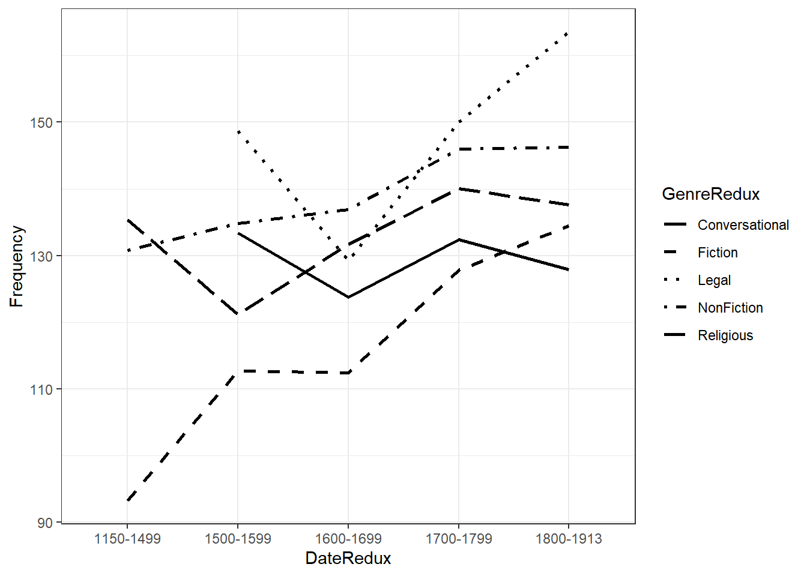
Available line types:
Code
# Visualize all line types d <-data.frame( lt =c("blank", "solid", "dashed", "dotted", "dotdash", "longdash", "twodash") ) ggplot() +scale_x_continuous(name ="", limits =c(0, 1)) +scale_y_discrete(name ="linetype") +scale_linetype_identity() +geom_segment( data = d, mapping =aes(x =0, xend =1, y = lt, yend = lt, linetype = lt), size =1 ) +theme_minimal()
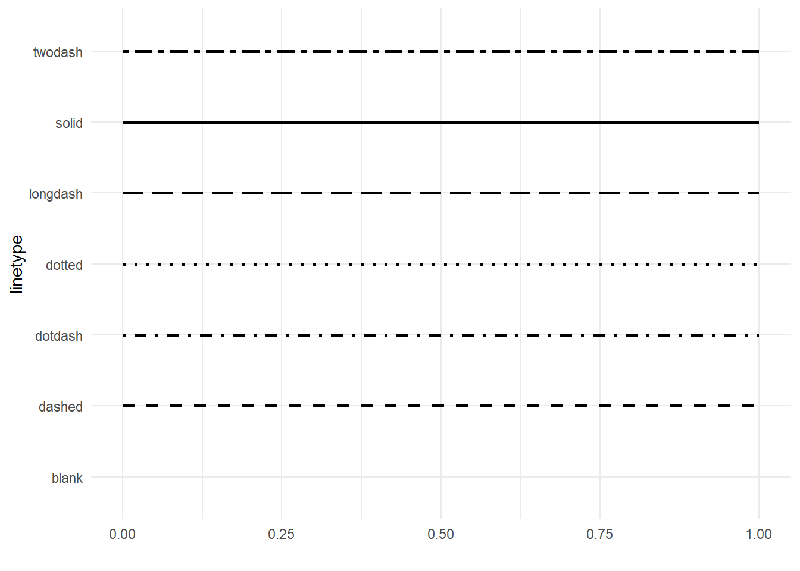
Advanced line types:
You can also specify linetypes as strings of numbers:
Code
# "13" means 1 unit on, 3 units off geom_line(linetype ="13") # "1342" means complex pattern: 1 on, 3 off, 4 on, 2 off geom_line(linetype ="1342")
When to use line types:
- Distinguishing multiple series in line graphs
- Redundant encoding with color
- Black-and-white publications
- Reference lines vs. data lines
- Confidence intervals vs. predictions
Limitations:
- Hard to distinguish >5 line types
- Can look messy with many lines
- Less intuitive than color
- Difficult with dense/noisy data
Transparency (Alpha)
Control transparency with alpha (0 = completely invisible, 1 = completely solid):
Why use transparency?
- See overlapping points - darker areas show more overlap
- De-emphasize background layers - focus on what’s important
- Show density - more overlap = darker = more data
- Reduce visual weight - less dominant in the composition
- Create hierarchy - foreground vs. background
Combining transparency with smoothing:
Code
ggplot(pdat, aes(x = Date, y = Prepositions)) +geom_point(alpha =0.2, size =2) +# Very transparent points geom_smooth(se =FALSE, color ="red", size =1.5) +# Solid trend line theme_bw()
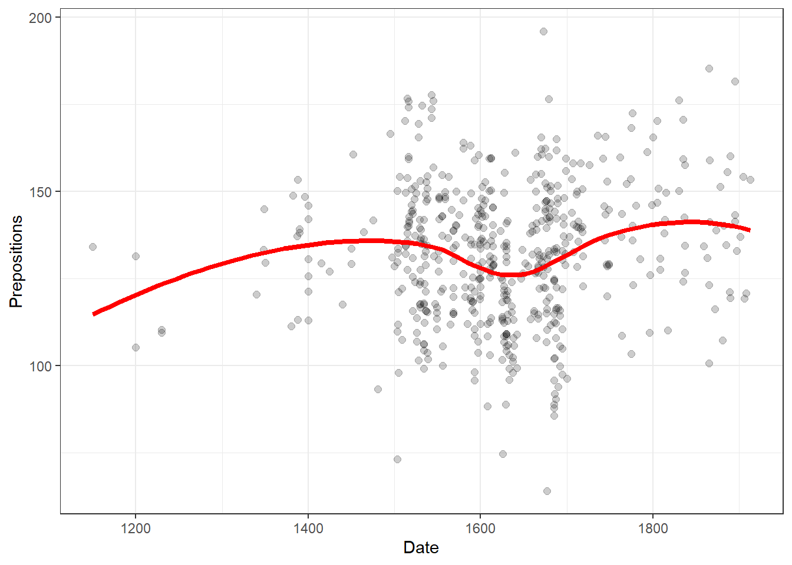
Choosing Alpha Values
Guidelines:
- alpha = 1.0 - Solid (default)
- alpha = 0.7-0.9 - Slight transparency, still prominent
- alpha = 0.4-0.6 - Medium transparency, good for moderate overlap
- alpha = 0.1-0.3 - High transparency, for heavy overlap
- alpha = 0 - Invisible (rarely useful)
Rule of thumb:
If you expect N overlapping points, use alpha ≈ 1/N
- 2-3 overlaps: alpha = 0.5
- 5-10 overlaps: alpha = 0.2
- 20+ overlaps: alpha = 0.05
When to map alpha to data:
- Showing probability/confidence
- Indicating data quality (less reliable = more transparent)
- Temporal sequence (older = more transparent)
- Emphasis (important = more opaque)
When NOT to map alpha:
- Primary variable (use position instead)
- Categorical data (use color/shape instead)
- When precision matters (transparency reduces readability)
Exercise 7.1: Visual Encoding Practice
Multi-Variable Visualization
Create a plot that shows 4 variables simultaneously using:
- X-axis: Date
- Y-axis: Prepositions
- Color: GenreRedux
- Shape: Region
Starter code:
Code
ggplot(pdat, aes(x = Date, y = Prepositions, color = GenreRedux, shape = Region)) +geom_point(size =3, alpha =0.6) +scale_color_brewer(palette ="Set1") +theme_bw()
Questions:
1. Can you still distinguish all the groups?
2. What’s the limit before a plot becomes too busy?
3. When would you use facets instead?
4. Does combining shape and color help or hurt?
Challenge:
- Add transparency to make overlapping points easier to see
- Try it with 3 regions instead of 2 - still readable?
- Create the same plot with facets instead of color - which is better?
Advanced:
Create a 5-variable plot by adding size for a continuous variable. Is it still interpretable?
Adjusting Sizes
Control point and line sizes to emphasize or de-emphasize:
Code
ggplot(pdat, aes(x = Date, y = Prepositions, size = Region, color = GenreRedux)) +geom_point(alpha =0.6) +scale_size_manual(values =c(2, 4)) +# Manual size control theme_bw()
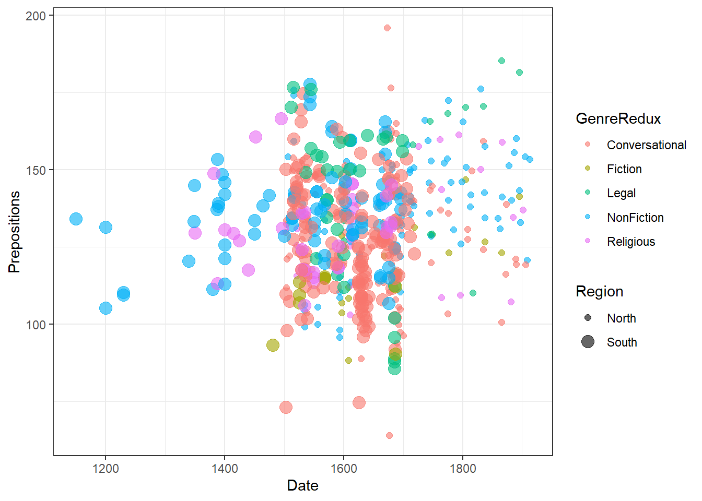
Mapping size to continuous data:
Code
ggplot(pdat, aes(x = Date, y = Prepositions, color = GenreRedux, size = Prepositions)) +geom_point(alpha =0.6) +theme_bw()
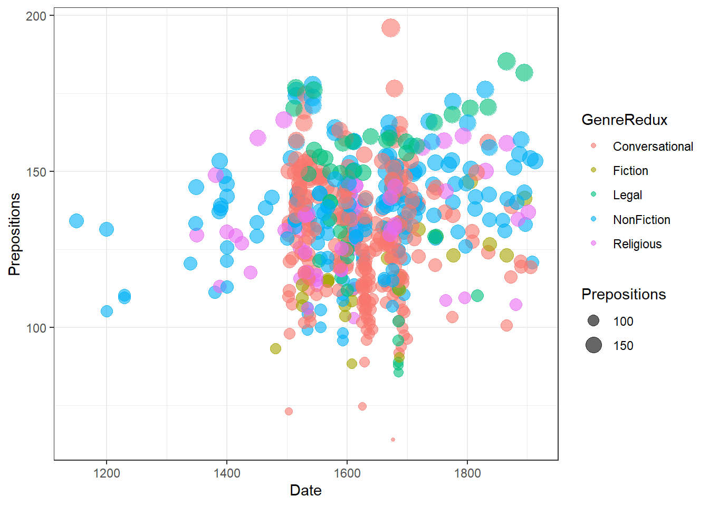
Controlling size ranges:
Code
# Default range scale_size() # Custom range scale_size(range =c(1, 10)) # Min 1pt, max 10pt # Area proportional to value (better perception) scale_size_area(max_size =10) # Binned sizes (for continuous data) scale_size_binned(n.breaks =5)
Size Warnings
Be careful with size mappings:
- Human perception of area is non-linear - we underestimate larger areas
- Size differences can be hard to compare precisely - not as accurate as position
- Works best for showing general magnitude differences - not exact values
- Can create clutter - large overlapping points are messy
- Consider using color or position instead for precise comparisons
Better alternatives:
Code
# Instead of mapping to size ggplot(data, aes(category, value, size = value)) # Use position (more accurate) ggplot(data, aes(category, value)) +geom_point() # Or color intensity ggplot(data, aes(category, group, fill = value)) +geom_tile()
When size DOES work well:
- Showing additional variable on scatter plot (bubble chart)
- Emphasizing importance (bigger = more important)
- Population/weight variables in scatter plots
- Relative magnitudes, not precise values
Line width guidelines:
- 0.25-0.5: Very thin, grid lines, reference lines
- 0.5-1.0: Normal data lines, default
- 1.0-2.0: Emphasis, main result
- 2.0+: Heavy emphasis, titles in plots
Reflection: Are there general rules, or does it depend on data characteristics?
Part 8: Adding Text and Annotations
Text annotations explain, highlight, and guide readers through your visualization. Good annotations can transform a confusing plot into a clear story.
The Power of Annotation
Annotations serve multiple purposes:
1. Guide interpretation
- Direct attention to key findings
- Explain unusual patterns
- Provide context
2. Add information
- Label specific points
- Show exact values
- Identify outliers or important cases
3. Tell a story
- Create narrative flow
- Build arguments
- Make comparisons explicit
4. Reduce cognitive load
- Eliminate need to cross-reference legends
- Make relationships obvious
- Clarify ambiguous elements
When to Annotate
Good candidates for annotation:
- Outliers or unusual points
- Maximum/minimum values
- Key transition points
- Intersections or crossovers
- Specific examples referenced in text
- Policy changes, events, interventions
Don’t annotate:
- Every single data point (clutter)
- Obvious patterns
- Things already in legend
- Information derivable from axes
Basic Text Labels
Add text for each data point using the label aesthetic:
Code
pdat |> dplyr::filter(Genre =="Fiction") |>ggplot(aes(x = Date, y = Prepositions, label = Prepositions, color = Region)) +geom_text(size =3) +theme_bw()
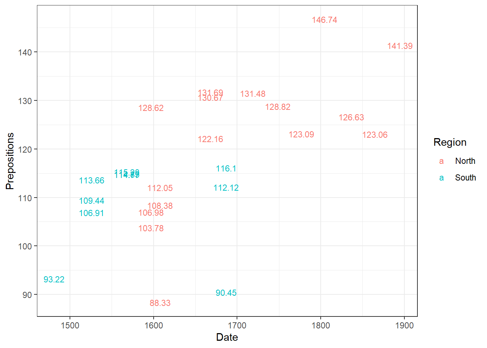
When to use geom_text():
- Labeling many points programmatically
- Labels ARE the data (no points needed)
- Creating text-based plots
- Small number of labels
When to avoid:
- Too many points (overlap chaos)
- Points are more important than labels
- Values are obvious from position
Combining points and text:
Code
pdat |> dplyr::filter(Genre =="Fiction") |>ggplot(aes(x = Date, y = Prepositions, label = Prepositions)) +geom_point(size =3, color ="steelblue") +geom_text(size =3, hjust =1.2, color ="black") +# Position to the left theme_bw()
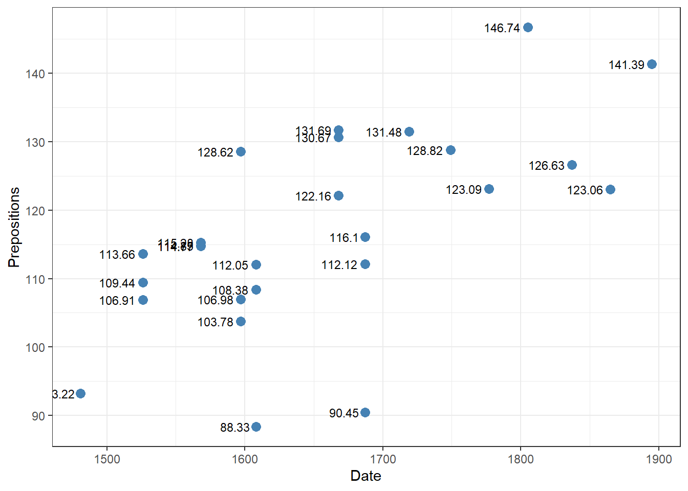
Positioning Text
Use nudge, hjust, and vjust to control placement precisely:
# Create demo demo_data <-data.frame( x =rep(1:3, each =3), y =rep(1:3, times =3), hjust =rep(c(0, 0.5, 1), each =3), vjust =rep(c(0, 0.5, 1), times =3), label =paste0("h=", rep(c(0, 0.5, 1), each =3), "\nv=", rep(c(0, 0.5, 1), times =3)) ) ggplot(demo_data, aes(x, y)) +geom_point(color ="red", size =3) +geom_text(aes(label = label, hjust = hjust, vjust = vjust), size =3) +theme_minimal()
Avoiding Label Overlap
For complex plots with many labels, use ggrepel:
Code
library(ggrepel) ggplot(data, aes(x, y, label = name)) +geom_point() +geom_text_repel( max.overlaps =20, # How many overlaps to tolerate box.padding =0.5, # Space around labels point.padding =0.3, # Space around points segment.color ="gray50", # Color of connecting lines min.segment.length =0# Always draw segments )
ggrepel advantages:
- Automatically positions labels to avoid overlap
- Draws connecting lines to points
- Highly customizable
- Works with both geom_text_repel() and geom_label_repel()
ggrepel options:
Code
geom_text_repel( # Overlap control max.overlaps =10, # Default: 10 force =1, # Repulsion strength force_pull =1, # Pull toward point # Spacing box.padding =0.35, # Around label box point.padding =0.5, # Around data point # Segments (connecting lines) segment.color ="gray", segment.size =0.5, segment.alpha =0.5, min.segment.length =0, # 0 = always show # Direction direction ="both", # "x", "y", or "both" nudge_x =0, nudge_y =0, # Aesthetics size =3, fontface ="plain", family ="sans")
Pro tip: For very dense plots, filter to label only the most important points:
Code
data |> dplyr::mutate(label =if_else(importance >0.9, name, "")) |>ggplot(aes(x, y, label = label)) +geom_point() +geom_text_repel()
Adding Annotations
Place text anywhere with annotate() - not tied to data:
Code
ggplot(pdat, aes(x = Date, y = Prepositions)) +geom_point(alpha =0.4, color ="gray40") +annotate(geom ="text", label ="Medieval Period", x =1250, y =175, color ="blue", size =5, fontface ="bold") +annotate(geom ="text", label ="Modern Era", x =1850, y =75, color ="darkgreen", size =4, fontface ="italic") +theme_bw()
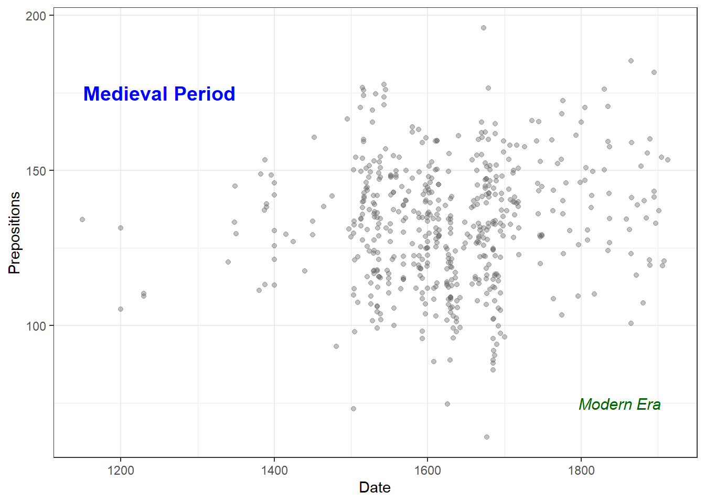
What can you annotate?
geom
Purpose
Example
"text"
Text labels
Annotating regions
"label"
Text with background box
Highlighting values
"rect"
Rectangles
Shading time periods
"segment"
Lines/arrows
Pointing to features
"point"
Individual points
Marking specific values
"curve"
Curved arrows
Artistic annotations
"ribbon"
Shaded regions
Ranges, confidence
Creating arrows and lines:
Code
# Simple arrow annotate("segment", x =1500, xend =1600, y =150, yend =120, arrow =arrow(length =unit(0.3, "cm")), color ="red", size =1) # Curved arrow (requires geom, not annotate) geom_curve(aes(x =1500, y =150, xend =1600, yend =120), arrow =arrow(length =unit(0.3, "cm")), curvature =0.3, color ="red") # Double-headed arrow annotate("segment", x =1400, xend =1600, y =100, yend =100, arrow =arrow(length =unit(0.3, "cm"), ends ="both"), color ="blue")
Shading regions:
Code
# Shade a time period annotate("rect", xmin =1500, xmax =1600, ymin =-Inf, ymax =Inf, # Full height alpha =0.2, fill ="yellow") +annotate("text", x =1550, y =150, label ="Renaissance", fontface ="bold") # Highlight a range annotate("rect", xmin =-Inf, xmax =Inf, ymin =140, ymax =160, alpha =0.1, fill ="red") +annotate("text", x =1400, y =150, label ="Target Range", hjust =0)
pdat |> dplyr::group_by(Region, GenreRedux) |> dplyr::summarise(Frequency =round(mean(Prepositions), 1)) |>ggplot(aes(x = GenreRedux, y = Frequency, group = Region, fill = Region, label = Frequency)) +geom_bar(stat ="identity", position ="dodge") +geom_text(vjust =1.5, position =position_dodge(0.9), color ="white", size =3) +# Inside bars theme_bw() +labs(x ="Genre", y ="Mean Frequency")
`summarise()` has regrouped the output.
ℹ Summaries were computed grouped by Region and GenreRedux.
ℹ Output is grouped by Region.
ℹ Use `summarise(.groups = "drop_last")` to silence this message.
ℹ Use `summarise(.by = c(Region, GenreRedux))` for per-operation grouping
(`?dplyr::dplyr_by`) instead.
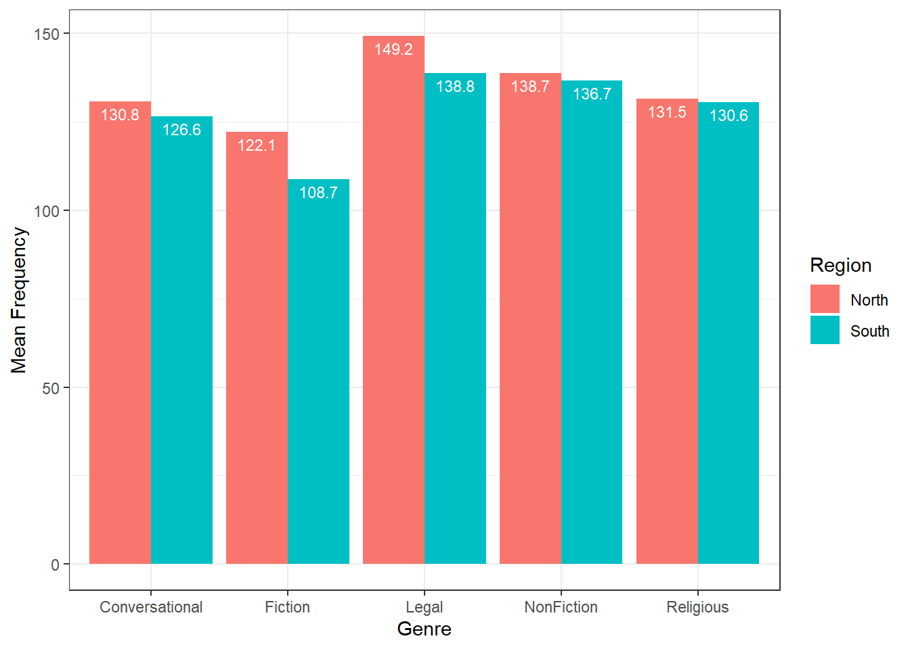
Label positioning strategies:
Code
# Above bars geom_text(vjust =-0.5) # Below bars geom_text(vjust =1.5) # Inside top geom_text(vjust =1.5, color ="white") # Inside bottom geom_text(vjust =-0.5, color ="white") # Exact center geom_text(vjust =0.5) # Auto-adjust based on value geom_text(aes(vjust =if_else(Frequency >100, 1.5, -0.5)))
Using Labels Instead of Text
geom_label() adds background boxes for better readability:
geom_label( # Box styling fill ="white", # Background color color ="black", # Border color alpha =0.7, # Transparency # Text styling size =3, fontface ="bold", family ="sans", # Positioning hjust =0.5, vjust =0.5, nudge_x =0, nudge_y =0, # Padding label.padding =unit(0.25, "lines"), # Space inside box label.r =unit(0.15, "lines"), # Rounded corners label.size =0.25# Border thickness )
geom_text vs. geom_label:
Feature
geom_text
geom_label
Background
None
Filled box
Readability
Depends on plot
Always readable
Visual weight
Light
Heavy
Best for
Many labels
Few labels
Best on
Clean backgrounds
Busy plots
Exercise 8.1: Annotation Practice
Tell a Story with Annotations
Create a scatter plot and add:
1. A title and subtitle
2. At least two text annotations highlighting interesting points
3. Value labels on specific data points
4. Proper axis labels
5. A shaded region or arrow
Template:
Code
ggplot(pdat, aes(Date, Prepositions)) +geom_point(alpha =0.4) +# Add shaded region annotate("rect", xmin = ___, xmax = ___, ymin =-Inf, ymax =Inf, alpha =0.1, fill ="___") +# Add arrow pointing to feature annotate("segment", x = ___, y = ___, xend = ___, yend = ___, arrow =arrow(length =unit(0.3, "cm")), color ="___") +# Add explanatory text annotate("text", x = ___, y = ___, label ="___", hjust = ___, vjust = ___) +labs( title ="___", subtitle ="___", x ="___", y ="___" ) +theme_bw()
Challenge: Use annotations to guide the reader through a narrative:
- “Notice the spike here…”
- “This outlier represents…”
- “The trend shifted after…”
Advanced: Create a “story plot” that could stand alone without accompanying text. Use:
- Title that states the finding
- Annotations that highlight key evidence
- Shaded regions showing important periods
- Arrows connecting related features
Reflection: How do annotations change how readers interpret your plot? Can you over-annotate?
Exercise 8.2: Recreating Published Figures
Real-World Practice
Find an annotated visualization from:
- The Economist
- New York Times
- Nature/Science journals
- FiveThirtyEight
Task:
1. Recreate the basic plot structure
2. Add similar annotations
3. Match the visual style as closely as possible
Skills practiced:
- Choosing annotation types
- Positioning text effectively
- Creating visual hierarchy
- Professional styling
Deliverable: Side-by-side comparison of original and your recreation.
Part 9: Combining Multiple Plots
Sometimes you need to show multiple related visualizations together to tell a complete story or allow comparison.
Why Combine Plots?
Multiple plots are useful for:
- Showing different aspects of the same data
- Comparing across groups or conditions
- Building a visual argument step-by-step
- Meeting publication requirements (Figure 1a, 1b, etc.)
- Creating comprehensive dashboards
Design considerations:
- Keep consistent styling across panels
- Use shared axes when appropriate
- Label panels clearly (A, B, C)
- Ensure each panel is interpretable
- Consider the reading order
Faceting: Small Multiples
Faceting creates multiple panels from one dataset based on categorical variables.
Why Facet?
Edward Tufte popularized “small multiples” - showing the same type of plot for different groups. Benefits:
Easy comparison - same scales, aligned axes
Reduces clutter - instead of overlapping lines/colors
Reveals patterns - trends visible within each group
Scalable - works with many groups
Edward Tufte’s principle:
> “At the heart of quantitative reasoning is a single question: Compared to what?”
Small multiples answer this by showing many comparisons simultaneously.
Facet Grid (2D Grid)
Code
ggplot(pdat, aes(x = Date, y = Prepositions)) +facet_grid(~GenreRedux) +# One row, columns for each genre geom_point(alpha =0.5) +theme_bw() +theme(axis.text.x =element_text(angle =45, hjust =1))
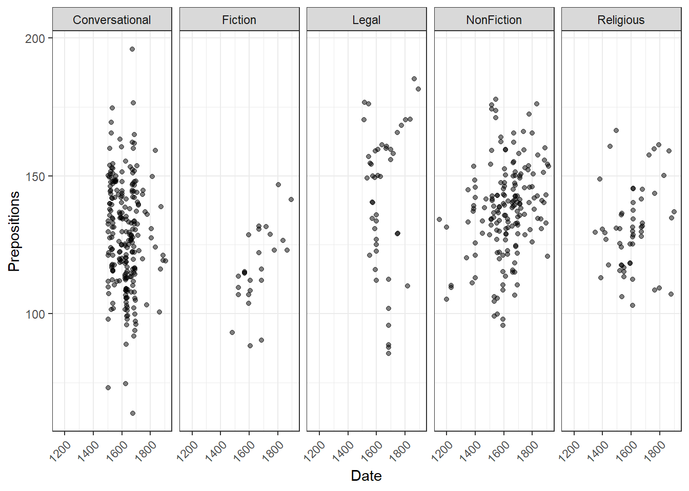
Facet by two variables:
Code
ggplot(pdat, aes(x = Date, y = Prepositions)) +facet_grid(Region ~ GenreRedux) +# Rows by Region, cols by Genre geom_point(alpha =0.5) +theme_bw() +theme(axis.text.x =element_text(angle =45, hjust =1))
facet_wrap( # Variables vars(variable1, variable2), # or ~variable # Layout ncol =3, # Number of columns nrow =2, # Number of rows # Scales scales ="fixed", # "free", "free_x", "free_y" # Labels labeller = label_both, # Show "var: value" # Direction dir ="h", # "h" horizontal, "v" vertical # Appearance strip.position ="top"# "top", "bottom", "left", "right" )
When to Use Facets
Facets work great when:
- Comparing patterns across categories
- Each panel shows the same type of plot
- You have 2-16 groups (sweet spot: 4-9)
- Direct comparison is important
- Axes can be shared (same scales)
Consider alternatives when:
- You have too many groups (>20)
- Plots need very different y-axis scales
- The plots are fundamentally different types
- You need maximum size for each plot
- Groups are better shown by color (2-5 groups)
Decision tree:
- 2-3 groups → Color usually better
- 4-9 groups → Facets ideal
- 10-16 groups → Facets can work
- 17+ groups → Consider grouping or filtering
Free Scales
Sometimes panels need different axis ranges:
Code
# All axes independent facet_wrap(~category, scales ="free") # Only y-axis varies facet_wrap(~category, scales ="free_y") # Only x-axis varies facet_wrap(~category, scales ="free_x") # Fixed (default) - all share same scales facet_wrap(~category, scales ="fixed")
Free Scales Can Mislead
While scales = "free" can reveal patterns within each panel, it can also:
- Hide real differences in magnitude
- Make visual comparison difficult
- Mislead about relative sizes
Use free scales when:
- Absolute values don’t matter, patterns do
- Differences in scale are so large some data would be invisible
- You explicitly note the scale differences
Avoid when:
- Comparison across panels is the main point
- Audience might misinterpret
- You can transform data instead (e.g., log scale)
Grid Arrange: Combining Different Plots
Use gridExtra::grid.arrange() to combine completely different plots:
Code
# Create individual plots p1 <-ggplot(pdat, aes(x = Date, y = Prepositions)) +geom_point(alpha =0.4) +theme_bw() +labs(title ="A) Scatter Plot") p2 <-ggplot(pdat, aes(x = GenreRedux, y = Prepositions)) +geom_boxplot(fill ="lightblue") +theme_bw() +labs(title ="B) Boxplot") +theme(axis.text.x =element_text(angle =45, hjust =1)) p3 <-ggplot(pdat, aes(x = DateRedux, fill = GenreRedux)) +geom_bar(position ="dodge") +theme_bw() +labs(title ="C) Bar Chart") +theme(axis.text.x =element_text(angle =45, hjust =1)) p4 <-ggplot(pdat, aes(x = Date, y = Prepositions)) +geom_point(alpha =0.3) +geom_smooth(se =TRUE, color ="red") +theme_bw() +labs(title ="D) With Trend") # Combine in a 1x2 grid grid.arrange(p1, p2, nrow =1)
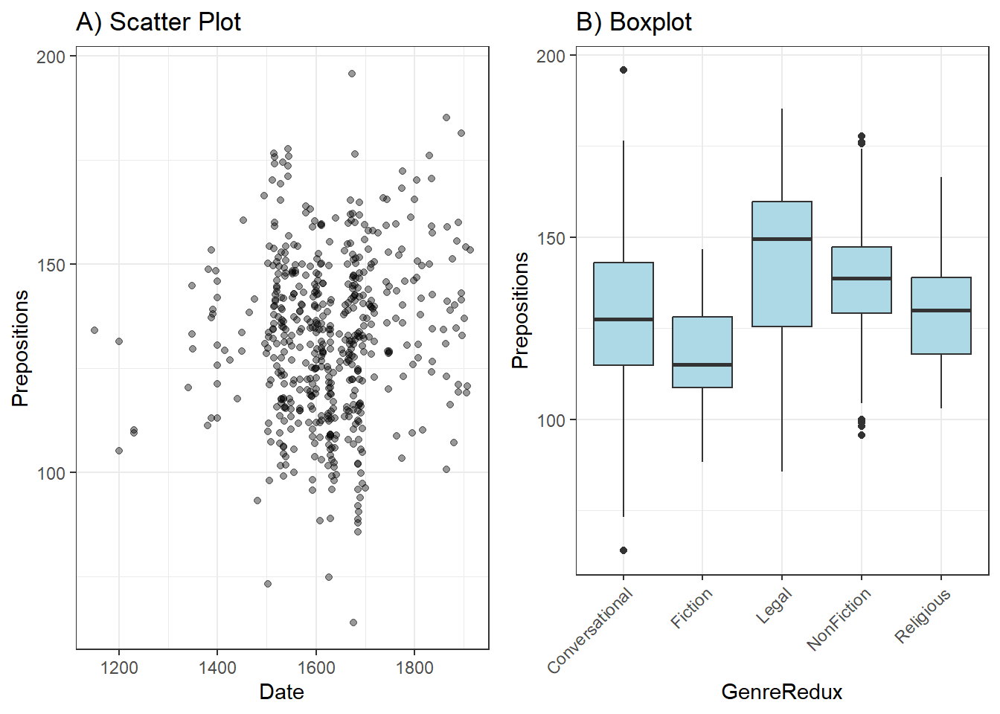
grid.arrange basics:
Code
# Simple grid grid.arrange(p1, p2, p3, p4, ncol =2) # Control dimensions grid.arrange(p1, p2, p3, nrow =3) grid.arrange(p1, p2, p3, p4, nrow =2, ncol =2) # Add title grid.arrange(p1, p2, p3, p4, ncol =2, top ="My Multi-Panel Figure") # Add subtitle/caption grid.arrange(p1, p2, ncol =2, top =textGrob("Main Title", gp =gpar(fontsize =20, font =2)), bottom =textGrob("Source: My Data", gp =gpar(fontsize =10)))
Custom Layouts
Create complex arrangements with unequal sizes:
Code
grid.arrange( grobs =list(p4, p2, p3), widths =c(2, 1), # First column twice as wide layout_matrix =rbind( c(1, 1), # First plot spans 2 columns c(2, 3) # Second and third plots side by side ) )
Challenge: Create a custom layout where one plot is larger than the others (like in the tutorial example).
Bonus:
1. Write a comprehensive figure caption
2. Save the figure at publication resolution (300 dpi)
3. Try the same layout with patchwork package
Exercise 9.2: Facets vs. Multiple Plots
Design Decision
Create the same information two ways:
Option 1: Faceted plot
Code
ggplot(pdat, aes(Date, Prepositions, color = Region)) +geom_point() +geom_smooth() +facet_wrap(~GenreRedux)
Option 2: Separate plots combined
Code
# One plot per genre # Combine with grid.arrange()
Compare:
1. Which is easier to create?
2. Which is easier to read?
3. Which allows more customization?
4. Which would you use in:
- A paper?
- A presentation?
- An exploratory analysis?
5. At what number of groups does faceting become unwieldy?
Discussion: When is each approach better? What are the trade-offs?
Part 10: Themes and Styling
Themes control the non-data elements of your plot: backgrounds, grid lines, fonts, borders, and overall aesthetic. Mastering themes is key to creating professional, publication-ready visualizations.
Understanding the Theme System
ggplot2 separates data elements from non-data elements:
Data elements (controlled by geoms, scales):
- Points, lines, bars
- Axes (position, scale)
- Color mappings
- Statistical transformations
Non-data elements (controlled by themes):
- Background colors
- Grid lines
- Text fonts and sizes
- Margins and spacing
- Legend appearance
- Panel borders
This separation allows you to:
- Change appearance without changing data
- Maintain consistency across multiple plots
- Create publication-ready figures quickly
- Build custom institutional styles
Built-in Themes
ggplot2 includes several complete themes that change the overall look:
Code
# Create base plot p <-ggplot(pdat, aes(x = Date, y = Prepositions)) +geom_point(alpha =0.5) +labs(x ="", y ="") # Default theme p0 <- p +ggtitle("Default (theme_gray)") # Built-in alternatives p1 <- p +theme_bw() +ggtitle("theme_bw()") p2 <- p +theme_classic() +ggtitle("theme_classic()") p3 <- p +theme_minimal() +ggtitle("theme_minimal()") p4 <- p +theme_light() +ggtitle("theme_light()") p5 <- p +theme_dark() +ggtitle("theme_dark()") p6 <- p +theme_void() +ggtitle("theme_void()") p7 <- p +theme_linedraw() +ggtitle("theme_linedraw()") # Display all grid.arrange(p0, p1, p2, p3, p4, p5, p6, p7, ncol =4)
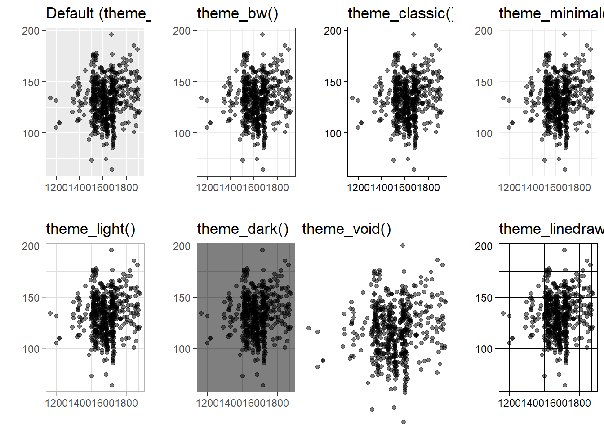
Theme characteristics:
Theme
Background
Grid
Border
Best For
theme_gray()
Gray
White
None
Default, general use
theme_bw()
White
Gray
Black
Publications, clean look
theme_classic()
White
None
L-shaped axes
Traditional plots, journals
theme_minimal()
White
Minimal gray
None
Modern, clean presentations
theme_light()
White
Light gray
Light border
Easy on eyes, screens
theme_dark()
Dark
White
Dark border
Dark mode, presentations
theme_void()
None
None
None
Minimalist, artistic
theme_linedraw()
White
Gray
Black
Technical drawings
Choosing a Theme
For academic papers:
- theme_bw() - Most widely accepted
- theme_classic() - Some journals prefer
For presentations:
- theme_minimal() - Modern, clean
- theme_dark() - Dark rooms
For web/reports:
- theme_minimal() - Clean, modern
- theme_light() - Easy reading
Customizing Themes
Fine-tune any theme element to create your perfect style:
Code
ggplot(pdat, aes(x = Date, y = Prepositions, color = GenreRedux)) +geom_point(alpha =0.6, size =2) +theme_bw() +theme( # Panel panel.background =element_rect(fill ="white"), panel.border =element_rect(color ="black", fill =NA, size =1), panel.grid.major =element_line(color ="gray90", size =0.5), panel.grid.minor =element_blank(), # Text plot.title =element_text(size =16, face ="bold", hjust =0.5), plot.subtitle =element_text(size =12, hjust =0.5, color ="gray30"), axis.title =element_text(size =12, face ="bold"), axis.text =element_text(size =10), # Legend legend.position ="bottom", legend.background =element_rect(fill ="gray95", color ="black"), legend.title =element_text(face ="bold"), legend.key =element_rect(fill ="white") ) +labs( title ="Customized Theme Example", subtitle ="Showing various theme modifications", color ="Genre" )
Warning: The `size` argument of `element_rect()` is deprecated as of ggplot2 3.4.0.
ℹ Please use the `linewidth` argument instead.
Warning: The `size` argument of `element_line()` is deprecated as of ggplot2 3.4.0.
ℹ Please use the `linewidth` argument instead.
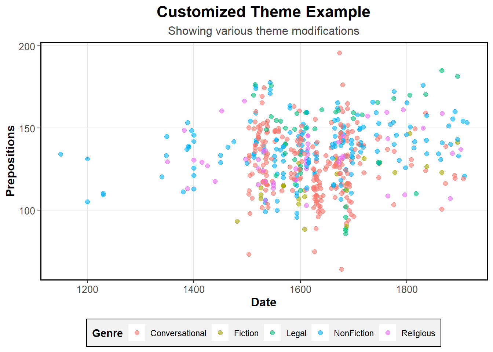
Exercise 10.1: Design Your Own Theme
Create a Custom Theme
Design a theme that reflects your personal or institutional style:
Code
my_theme <-function(base_size =12, base_family ="sans") { theme_minimal(base_size = base_size, base_family = base_family) +theme( # Your customizations here plot.title =element_text(face ="bold", size = base_size +2), panel.grid.minor =element_blank(), legend.position ="bottom" ) } # Test it ggplot(pdat, aes(Date, Prepositions, color = GenreRedux)) +geom_point() +my_theme()
Challenge: Create two themes—one for publications, one for presentations.
Part 11: Legend Control
Legends explain color, shape, size, and other aesthetic mappings.
Legend Position
Code
ggplot(pdat, aes(x = Date, y = Prepositions, color = GenreRedux)) +geom_point(size =2, alpha =0.6) +theme_bw() +theme(legend.position ="top") +labs(color ="Text Genre")
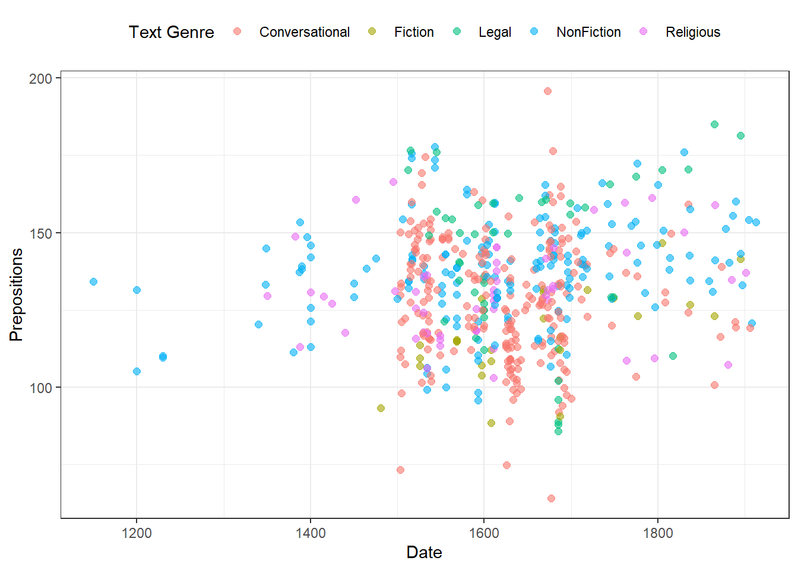
Position inside plot area:
Code
ggplot(pdat, aes(x = Date, y = Prepositions, linetype = GenreRedux, color = GenreRedux)) +geom_smooth(se =FALSE, size =1) +theme_bw() +theme( legend.position =c(0.15, 0.75), # x, y coordinates (0-1) legend.background =element_rect(fill ="white", color ="black") )
`geom_smooth()` using method = 'loess' and formula = 'y ~ x'
Create a plot with:
1. A legend positioned inside the plot area
2. Custom legend title and labels
3. Styled background
Challenge: Create a plot with two aesthetics and style both legends differently.
Part 12: Practical Tips and Workflows
Efficient Workflow
1. Start Simple, Add Complexity
Code
# Step 1: Basic plot p <-ggplot(data, aes(x, y)) +geom_point() # Step 2: Add grouping p <- p +aes(color = group) # Step 3: Refine aesthetics p <- p +scale_color_brewer(palette ="Set1") # Step 4: Add theme p <- p +theme_bw() # Step 5: Polish labels p <- p +labs(title ="...", x ="...", y ="...")
Create a complete, reproducible visualization:
1. Load and explore data
2. Create base plot
3. Customize systematically
4. Save in multiple formats
5. Document everything
Deliverable: A script someone else could run to recreate your plots.
Part 13: Advanced Techniques
Interactive Visualizations
Code
library(plotly) p <-ggplot(pdat, aes(Date, Prepositions, color = GenreRedux)) +geom_point() +theme_bw() ggplotly(p) # Now interactive!
ggplot(data = DATA, aes(x = X, y = Y, color = GROUP)) +geom_FUNCTION() +scale_AESTHETIC_TYPE() +facet_FUNCTION(~VARIABLE) +theme_STYLE() +labs(title ="", x ="", y ="")
Common Geoms
Geom
Use
geom_point()
Scatter plots
geom_line()
Line graphs
geom_bar()
Bar charts
geom_boxplot()
Box plots
geom_histogram()
Histograms
geom_density()
Density plots
geom_smooth()
Trend lines
geom_text()
Text labels
Aesthetic Mappings
Aesthetic
Controls
x, y
Position
color
Point/line color
fill
Fill color
size
Point/line size
shape
Point shape
linetype
Line style
alpha
Transparency
Color Scales
Code
scale_color_manual(values =c("red", "blue")) scale_color_brewer(palette ="Set1") scale_color_viridis_d() scale_color_gradient(low ="white", high ="red")
# Built-in R datasets data(mtcars) data(iris) data(diamonds) # From packages library(gapminder) data(gapminder)
Final Challenge
Capstone Visualization Project
Create a complete, publication-ready visualization demonstrating everything you’ve learned:
Requirements:
Data preparation
Load and clean data
Create summary statistics
Main visualization
Appropriate plot type
At least 3 aesthetic mappings
Custom color scheme
Professional theme
Customization
Proper labels and title
Customized axis
Styled legend
Annotations
Polish
Consistent style
Publication-ready quality
Save in multiple formats
Documentation
Comments explaining choices
Figure caption
Session info
Deliverable: A complete R script and high-quality figure(s).
Citation & Session Info
Citation
Martin Schweinberger. 2026. Introduction to Data Visualization in R. The Language Technology and Data Analysis Laboratory (LADAL), The University of Queensland, Australia. url: https://ladal.edu.au/tutorials/data_viz_intro/data_viz_intro.html (Version 3.1.1). doi: 10.5281/zenodo.19332890.
@manual{martinschweinberger2026introduction,
author = {Martin Schweinberger},
title = {Introduction to Data Visualization in R},
year = {2026},
note = {https://ladal.edu.au/tutorials/data_viz_intro/data_viz_intro.html},
organization = {The Language Technology and Data Analysis Laboratory (LADAL), The University of Queensland, Australia},
edition = {3.1.1}
doi = {10.5281/zenodo.19332890}
}
This tutorial was re-developed with the assistance of Claude (claude.ai), a large language model created by Anthropic. Claude was used to help revise the tutorial text, structure the instructional content, generate the R code examples, and write the checkdown quiz questions and feedback strings. All content was reviewed, edited, and approved by the author (Martin Schweinberger), who takes full responsibility for the accuracy and pedagogical appropriateness of the material. The use of AI assistance is disclosed here in the interest of transparency and in accordance with emerging best practices for AI-assisted academic content creation.